110 16th Street Suite 1460 Denver Colorado 80202-5269 Call: (303) 565-5966
Unit 166301 PO Box 7169 Poole BH15 9EL United Kingdom Text: (866) 98 REICH
The Reich Family is a Trinitarian religious organisation headquartered in Denver Colorado with international chapters around the world. At the theological heart of the Reich Family is the ancient New Testament concept of the ekklēsia: the "called-out assembly." We are united by the sacred, legal adoption of our Family surname as a transformative sign of spiritual rebirth and familial kinship. We share the belief that we were created in the Image of Almighty God and that the Holy Trinity is the ultimate Power of Heaven and Earth. Certain aspects of our religious philosophies and practices are similar to those of the Roman Catholic Church and Judaism. We join this unified global family of faith with a shared life, shaped by collective decision-making and guided by our anointed father Reich.
The Reich Family is not solely a religious group. We are a strong, thriving family. We live our lives, work, raise our children, manage our households, and meet practical needs. Though we follow the guidance of our leader, Reich, our lives are shaped and confirmed through collective decision‑making that is sealed with a family-wide democratic vote. Day to day practices, household norms, and chapter policies are developed in a discussion phase, put to a family vote, and implemented by individual households and chapters assuring that any guidance reflects the will and needs of the whole Family.
Reich is our anointed earthly father, whom we love and deeply respect as the head of our family. Our shared surname originates from his own, symbolising our unity and our commitment to live as one family in faith. We rely upon his guidance and teachings. We hold him in high regard but we do not worship Reich as our god. Our respect for Reich is similar to the honour the Roman Catholic Church shows to their pope, cardinals, bishops, and priests yet they are not worshipped as gods. Reich serves as our intercessor to the Holy Trinity, much as Catholics seek the intercession of the Blessed Mother and the saints, a practice some among us also embrace. Yet just as Catholics do not worship their intercessors as gods, Reich is not worshipped as the god of the Reich Family; nor is any other earthly man, woman, or child.
Embracing our identity as members of the Reich Family involves a sacred commitment, beginning with the legal change of our surnames to the family name, Reich. This transformative act signifies a shared identity and a pledge to live collectively as one family and one religion. Just as Levi became Matthew upon accepting Jesus’ call Matthew 9:9 and Saul transformed into Paul after his encounter with Christ, indicating a complete rebirth in his faith Acts 9:1-19, our adoption of the Reich name symbolises a profound familial and religious transformation.
This practice reinforces the bonds that unite us, transforming our group into something greater than merely a religious organisation. It emphasises our dedication and devotion, one to the other, fostering genuine familial kinship. This unique tradition differentiates us from other religious groups throughout history, strengthening our identity as a cohesive family unit and deepening our individual sense of belonging and kinship. By embracing the Reich name, we become true sisters and brothers, fathers and mothers, interconnected not solely through our values and beliefs but also through authentic familial love. (Explore the Table of Contents or return to the Beginning)
The Reich Family is a small religious organisation of less than a thousand members worldwide. We are not concentrated in high numbers in a single location. The Family consists of multiple subgroups or chapters. A chapter is located in a single village or city and consists of several biological families and singles living in separate housing ranging from apartments to houses. Family chapters are located in different countries around the world. This global system of living and religious practice is implemented through our local chapters, which offer profound practical benefits for our members' safety, privacy, and quality of life.
Chapters come with a number of advantages. Chapters prevent overcrowding and economic overextension that can occur in a communal family that is concentrated in high numbers in a single location, greatly improving the Family's quality of life. Chapters of biological families and singles living in separate housing grant us individual privacy. A large communal family, with a thousand or more people, concentrated in a single location, would create a spectacle within a community. Chapters allow the Family to easily blend into the general population without bringing undue attention to ourselves. From a logistical standpoint, chapters reduce the complications of movement that would be experienced if the Family travelled in a single large group, in which case all members would share the same surname on their travel documents, which might draw undue attention at international ports of entry. The creation of chapters allows for the Family to grow and internationally expand.
The Reich Family is incorporated in the US State of Colorado as a domestic non-profit religious organisation. Our registered office address in Denver Colorado serves as the central administrative and ecclesiastical authority for our international community of chapters. Our corporate registration may be verified through the Colorado Secretary of State's business database by clicking on our Corporate ID: 20261456940. The Reich Family is a verified corporation at Dun & Bradstreet (D-U-N-S® Number: 14-583-8166).
The Reich Family maintains its principal office at 110 16th Street Suite 1460, Denver Colorado 80202-5269. This address serves as our official legal domicile and registered agent location for service of process and state records as required under Colorado law. It is not a mailing address and does not receive general correspondence. Our corporate records, including Articles of Incorporation, bylaws, board resolutions, and financial statements, are maintained internally by the organisation. Our governance is conducted by a board of directors in accordance with our bylaws and the religious principles that define our community.
Our international chapters, while operating in accordance with applicable local laws in their respective countries, remain fully accountable to and under the authority of our Colorado headquarters. They are not separate legal entities but extensions of this single, unified church body. The Reich Family religious non profit corporation operates under a unified governance structure. Our chapters worldwide are integral parts of this single organisation. This unified structure ensures consistency of doctrine, discipline, practice, and mission across all locations while providing a stable legal foundation for our global work and witness.
This legal foundation allows us to hold property in the US under our organisational name, enter into agreements, receive and steward donations, receive tithes from our members and grant them tax deductibility, and extend our ministry both within the United States and throughout our international chapters, all in the Reich Family organisational name. As a great example of the advantages of our US legal entity, the Reich Family holds a business bank account in the United States. US bank transfers of tithes and donations come to the Reich Family business account via ACH. International bank transfers of tithes and donations come to the Reich Family business account via SWIFT international bank transfers. Our American legal base provides continuity, accountability, and administrative coordination for all aspects of our organisation’s work.
We are recognised as a church under the Internal Revenue Code and operate exclusively for religious purposes. We comply with all applicable state and federal requirements for non-profit religious organisations. Our federal tax-exempt status extends to our integrated activities worldwide. As we state in our Articles of Incorporation, available online on the Colorado Secretary of State website, the Reich Family is a religious organization based in the US state of Colorado with multiple international chapters. The specific purpose of this corporation is to operate exclusively for religious purposes within the meaning of Section 26 U.S.C. 501(c)(3) of the Internal Revenue Code, including conducting religious services, providing religious instruction, promoting spiritual development, and any other lawful activities consistent with the religious mission of the Reich Family. We affirm that the Reich Family constitutes a New Testament ekklēsia: a called-out assembly or church understood as our global, familial body of believers who gather together to worship the Holy Trinity and that this ekklēsia is a church within the meaning of 26 U.S.C. § 508(c)(1)(A). No part of the net earnings shall inure to the benefit of any private individual. No substantial part of the activities shall be carrying on propaganda, or otherwise attempting to influence legislation, and the corporation shall not participate in any political campaign on behalf of or in opposition to any candidate for public office. For further reference, see IRS guidance on churches and religious organizations and 26 U.S.C. § 170(c)(2) on charitable contribution deductions. (Explore the Table of Contents or return to the Beginning)
The Reich Family practices a Trinitarian religion that is our own. We believe in the Holy Trinity, that is One Divine Essence, consisting of Three Distinct Persons: Almighty God the Father or Patris; Christ Jesus the Son or Filii; and the Holy Spirit or Spiritus Sancti. The Holy Trinity is omnipotent, omniscient, omnipresent, and eternal. Trinitarianism is not a polytheistic religion. The Holy Trinity does not consist of three separate gods. Instead, the Trinity is One Divine Essence in Three Persons.


Almighty God, the Father, or Patris is the Grand Designer or Creator of Heaven and Earth. Almighty God created us all in His Image. Almighty God is the Father of His Son, Jesus Christ. Jesus refers to his Father in Heaven, as a separate entity from Himself, on several occasions throughout the New Testament. Jesus prayed to His Father while on earth, demonstrating a distinction between the Father and the Son. In Matthew 6:9-10 Jesus prayed, 9 After this manner therefore pray ye: Our Father which art in heaven, Hallowed be thy name. 10 Thy kingdom come, Thy will be done in earth, as it is in heaven. Jesus distinguished himself from His Father when he said in John 14:2, In my Father's house are many mansions: if it were not so, I would have told you. I go to prepare a place for you. Numerous biblical references state that, after Christ's Ascension to Heaven, Jesus sits at the right hand of the Father. Those references include Psalm 110:1, Matthew 22:44, Mark 16:19, Acts 2:33-35, Acts 5:31, Acts 7:55-56, Romans 8:34, Ephesians 1:20, Colossians 3:1, Hebrews 1:3, Hebrews 1:13, I Peter 3:22, and Revelation 3:21. This concept supports Trinitarian theology by affirming the equal and distinctive nature of Almighty God, Christ Jesus, and the Holy Spirit, within One Divine Essence that is the Holy Trinity.
Jesus Christ, the Son of Almighty God, or Filii is the Prince of Peace and the Blessed Saviour who died so that we might live. His teachings, while on earth, were that of love, forgiveness, and peace. His miraculous acts, while on earth, such as healing the sick, casting out demons, feeding the multitudes, turning water into wine, and raising the dead, proved that he was truly the Son of the Living God. John 3:16 states, For God so loved the world, that He gave His only begotten Son, that whosoever believeth in Him should not perish, but have everlasting life. Isaiah 53:4-6 states, 4 Surely he hath borne our griefs, and carried our sorrows: yet we did esteem him stricken, smitten of God, and afflicted. 5 But he was wounded for our transgressions, he was bruised for our iniquities: the chastisement of our peace was upon him; and with his stripes we are healed. 6 All we like sheep have gone astray; we have turned every one to his own way; and the Lord hath laid on him the iniquity of us all. In all these things, Christ Jesus fulfilled the will of His Father and revealed the unity and purpose of the Holy Trinity.
The Holy Spirit or Spiritus Sancti endows us with supernatural Gifts of the Spirit. The nine gifts of the Holy Spirit are listed in I Corinthians 12:8-10 as the word of wisdom, the word of knowledge, faith, gifts of healing, the working of miracles, prophecy, discerning of spirits, different kinds of tongues, and the interpretation of tongues. We experience the Fruits of the Holy Spirit that are mentioned in Galatians 5:22-23 as love, joy, peace, patience, kindness, goodness, faithfulness, gentleness, and self-control. The Holy Spirit fills us with the knowledge and understanding of every aspect of Almighty God and Jesus Christ. The Holy Spirit reveals the answers to the most complex questions we might have about our religion and life.
The Family’s faith is centred upon the Holy Trinity in perfect unity and equality. While many churches place particular emphasis on one Person of the Trinity, our religion maintains an equal exaltation of Almighty God the Father, Christ Jesus the Son, and the Holy Spirit. Our devotion is directed to the Holy Trinity as a whole rather than to one Divine Person as the defining name of our faith. In equal measure, we love, honour, and exalt Almighty God, Christ Jesus and the Holy Spirit. This balance is essential to our belief that the Trinity is One Divine Essence in Three Persons, each fully divine, each fully eternal, and each fully worthy of our devotion.
Our religion has been shaped by many influences, including elements found within Catholic tradition, yet it has developed into a distinct Trinitarian faith with its own identity, practices, and understanding of the Divine. We hold profound respect for all faiths that honour the Holy Trinity, while remaining faithful to the unique structure and emphasis of our own. Our devotion is rooted in the equality, unity, and eternal majesty of the Three Persons who together are the One Holy Trinity. (Explore the Table of Contents or return to the Beginning)
The Family considers the Old Testament and the New Testament, collectively known as the Holy Bible, to be the complete Holy Writings of our religion. The Holy Bible is the sacred Word of Almighty God that He inspired its authors to write as the eternal Living Word. Our interpretation of the Holy Bible is granted to us through the Illumination of the Holy Spirit that serves as a light that guides our path to understanding. The Illumination grants us the ability to apply the Holy Bible to our day to day lives. Our biblical interpretations prepare us for the life beyond the one we now experience on earth. The Holy Bible allows us to understand the historical foundation of our religion. We gain knowledge and understanding of the creation of the Heavens, the Earth, and humankind by Almighty God. The Holy Bible tells the story of the life, death and resurrection of Jesus Christ. The Holy Bible grants us knowledge and understanding of the presence, power, fruits, and gifts of the Holy Spirit. We learn of the works of such great men of Almighty God as Abraham, Moses, David, Solomon, the Apostle Paul, and many others. The Old Testament and the New Testament collectively focus on all Three Persons of the Holy Trinity, fulfilling our Trinitarian religion. The first five books of the Old Testament are the same as The Torah, fulfilling the Judaic component of our religion.
The Family relies upon the Holy Writings of the Old Testament, with the first five books comparable to the Hebrew language version of The Torah. The Old Testament focuses on Almighty God, One of the Three Persons of the Holy Trinity. The first five books of the Old Testament that are the same as the Torah are the books of Genesis, Exodus, Leviticus, Numbers, and Deuteronomy. The first five books of the Old Testament only differ from The Hebrew Torah by linguistic translation. We read the English version of the Old Testament. The Orthodox Jewish religion reads the original Hebrew language of The Torah. These language differences are often cited by Jewish Torah scholars and by Jewish Rabbis. The Family accepts the additional books of the Old Testament that are recognised in Christian traditions.
The Family relies upon the Holy Writings of The New Testament, otherwise known as the Christian Bible. The New Testament documents the teachings, life, death and resurrection of Jesus Christ. The New Testament focuses on Jesus Christ and the Holy Spirit, Two of the Three Persons of the Holy Trinity. The New Testament allows us to understand the origins of the first nine Christian churches formed by the Apostle Paul in Pisidian Antioch, Iconium, Lystra, Derbe, Philippi, Thessalonica, Berea, Corinth and Ephesus. Though the Family is not a Christ centred religion, we value the work and wisdom that the Apostle Paul brought to the Christian movement. The Apostle Paul's work has been the basis for almost every Christian church over two millennia since Christ's death and resurrection. Jesus reminded us in his lifetime, in Matthew 5:17-20, 17 Do not think that I have come to abolish the Law or the Prophets. I have come not to abolish but to fulfil them. 18 Amen, I say to you, until heaven and earth pass away, not a single letter, not even a tiny portion of a letter, will disappear from the Law until all things have been accomplished. 19 Therefore, whoever breaks even one of the least of these commandments and teaches others to do the same will be considered least in the kingdom of heaven. But whoever observes these commandments and teaches them will be called great in the kingdom of heaven. 20 I tell you, if your righteousness does not exceed that of the scribes and Pharisees, you will never enter the kingdom of heaven.
Our interpretation of the Holy Bible, through the Illumination of the Holy Spirit, is what differentiates us from other religions and them from us. Divisions within the Christian church were addressed by the Apostle Paul in I Corinthians 11:18-19 when he said, 18 To begin with, when you come together in your assembly, I hear that there are divisions among you, and to some extent I am inclined to believe it. 19 There must be such factions among you so that it will become clear to you which groups should be trusted. The Apostle Paul called for unity within the Christian church in I Corinthians 1:10 saying, Now I beseech you, brethren, by the name of our Lord Jesus Christ, that ye all speak the same thing, and that there be no divisions among you; but that ye be perfectly joined together in the same mind and in the same judgement. (Explore the Table of Contents or return to the Beginning)
The Family believes in the power of prayer, in unity, to our anointed father Reich who intercedes on our behalf to the Holy Trinity. Reich possesses the Spiritual Gift of Faith, one of the nine Gifts of the Spirit described in I Corinthians 12:4-11. We do not raise our prayers to Reich with the belief that he is greater than or a replacement for the Holy Trinity. We do not pray to our anointed father as our God. We pray to Reich that he might intercede on our behalf to Almighty God, His Son Jesus Christ, and the Holy Spirit, through the Power of his Faith and Infinite Love for His Family. Reich lifts our prayers to the Heavens in Nomine Patris et Filii et Spiritus Sancti. Thus we pray more through him than to him. While it is true that we can pray directly to the Holy Trinity, there is no power greater than the Gift of Faith and Infinite Love that we have witnessed in our anointed father Reich who intercedes to the Holy Trinity on our behalf.
To better understand the concept of intercessory prayer, we refer to how Catholics pray to the Saints and to Mother Mary for their intercession to a higher Holy Trinity. In the article, Why Do Catholics Pray to Saints? Is it Biblical?, Veronica Olson Neffinger, a Content Editor for Salem Web Network, best explains why when she writes, "What may seem idolatrous and blasphemous to those who were raised in Protestant Evangelical families and churches, seems completely normal to Catholics. In the Catholic view, saints, those who have died with faith in Christ, can intercede for us. Although it may seem to many Protestants that Catholics are worshipping the saints or elevating them to a level with Christ, the official Catholic doctrine says praying to the saints is not worshipping them; rather, it is about intercession. Those, like Mary, the mother of Christ, are thought to be close to Jesus and so they have a particular power to go to God on behalf of those of us who are still in the midst of our earthly struggles. Prayer to Mary is a way of being drawn towards Jesus. Just as a Protestant might go to a pastor to say, ‘pray for me’ with the assumption that your pastor will point you to Jesus, so also a Catholic will pray to Mary with the confidence that she will direct us to the Lord Jesus. It is an act of intercession. Protestant and Catholic interpretation of these passages about intercession is that Protestants believe that “For there is one God and one mediator between God and mankind, the man Christ Jesus” (I Tim. 2:5) and that all Christians should pray directly to him when praying for one another, and he will then intercede for us with the Father. Catholics, on the other hand, believe that Jesus intercedes for us, but that other faithful believers can do so as well."
Because we believe in the Communion of Saints - the living and enduring fellowship willed by the Holy Trinity that unites the faithful in Heaven, in Purgatory, and on earth as one family in the love of the Father, the grace of the Son, and the fellowship of the Holy Spirit - members of the Reich Family also pray to the Blessed Mother, to Saint Agnes, to any of the saints, and even to our own deceased loved ones who have gone before us in faith. The saints in Heaven, perfected by the sanctifying work of the Holy Spirit and dwelling in the light of Almighty God, surround us as a great cloud of witnesses, as described in Hebrews 12:1, Wherefore seeing we also are compassed about with so great a cloud of witnesses, let us lay aside every weight, and the sin which doth so easily beset us, and let us run with patience the race that is set before us, and they intercede before the throne of the Holy Trinity for those still on earth, as Scripture testifies in Job 5:1, Call now, if there be any that will answer thee; and to which of the saints wilt thou turn?
Among this great cloud of saints, perfected in glory and dwelling in the light of Almighty God, the Reich Family holds in special honour the Blessed Virgin Mary, a pre-eminent member of the Communion of Saints. Members may therefore offer the traditional prayers of devotion to her that have been cherished by the faithful for centuries: the Hail Mary, the Angelus, the Regina Caeli, the Salve Regina, the Memorare, the Litany of the Blessed Virgin Mary, the Rosary, and countless other prayers asking for her intercession. Mary, who stood at the foot of the Cross and now reigns with her Son Jesus Christ in Heaven, is a powerful intercessor and a beloved mother to all who seek her aid.
When a Reich Family member offers such prayers, whether to the Blessed Mother, to a saint, or to a departed loved one, they are not leaving the Family or bypassing our anointed father Reich. They are simply reaching out to another member of the same family in the Body of the Holy Trinity. All prayer, whether directed initially to Reich, to Mother Mary, to a saint, to a departed loved one, or directly to the Father, Son, or Holy Spirit, is part of the one great chorus of the faithful. And our anointed father Reich, as the living intercessor for the Reich Family in this present age, gathers all these prayers and lifts them, together with the whole life of the Family, to the Holy Trinity: Almighty God the Father, Christ Jesus the Son, and the Holy Spirit. (Explore the Table of Contents or return to the Beginning)
The Reich Family's doctrine of the Charismata is rooted in our strict, co-equal Trinitarian faith. We believe the Holy Spirit, or Spiritus Sancti, is a fully Divine Person of the Holy Trinity. Therefore, we hold that the Nine Charismata are active, divine empowerments granted by the Holy Spirit for the building up of the sacred assembly of our Family. To limit these gifts to ancient biblical times would be to limit a Person of the Godhead. Their purpose extends beyond any historical limitation. While given for the 'common good,' the Holy Spirit bestows these gifts as the divine means by which our Family, as a living ekklēsia, is sustained, guided, and perfected in our earthly pilgrimage.
The extraordinary powers and spiritual gifts granted by the Holy Spirit, as described by the Apostle Paul in I Corinthians 12:4-11 are: the Word of Wisdom, the Word of Knowledge, the Gift of Faith, the Gift of Healing, the Working of Miracles, the Gift of Prophecy, the Discerning of Spirits, Diverse Kinds of Tongues, and the Interpretation of Tongues.
The scriptural foundation is found in the Apostle Paul's First Epistle to the Corinthians, chapters 12 through 14. In this passage, two primary Greek terms are used: pneumatika, 'spirituals' or 'things of the Spirit', and charismata (singular charism), derived from charis meaning 'grace'. These are enablements divinely bestowed by the Holy Spirit. They cannot be earned and are distributed according to the Holy Spirit's will for the common good.
Theological discourse often categorizes these gifts. Some divide them by function: Gifts of Revelation (Word of Wisdom, Word of Knowledge, Discerning of Spirits), Gifts of Power (Faith, Healings, Miracles), and Gifts of Inspired Speech (Prophecy, Tongues, Interpretation). A broader distinction is sometimes made between the 'miraculous' or 'sign' gifts and other gifts of service and administration.
The Divine Gifts of the Holy Spirit were foretold by the Prophet Joel in Joel 2:28 when he said, And it shall come to pass afterward, that I will pour out my spirit upon all flesh; and your sons and your daughters shall prophesy, your old men shall dream dreams, your young men shall see visions. The Divine Gifts were promised to believers by Christ in Mark 16:17-18 saying, And these signs shall follow them that believe; In my name shall they cast out devils; they shall speak with new tongues. Jesus continues in verse 18 saying, They shall lay hands on the sick, and they shall recover. The Lord’s promise was fulfilled on the day of Pentecost as described in Acts 2:4 at Jerusalem and as the Christian Church spread in Samaria as described in Acts 8:18, in Caesarea, Ephesus, Rome, Galatia and more markedly, in Corinth as is described in I Corinthians 12:14. The abuses of the Charismata that had crept into the Church in Corinth caused the Apostle Paul to discuss the Divine Gifts of the Holy Spirit at length in his First Epistle to the Corinthians. Paul taught that these Divine Gifts given to individuals were intended for the edification of the whole community. (Based on Charismata / J Wilhelm / Catholic Encyclopaedia / 1907-1912).
The Reich Family believes that the Charismata of the Holy Spirit are given to the chosen just as other gifts and talents are given only to chosen individuals. It is not up to any one of us to receive these powerful spiritual gifts. The Holy Spirit decides whom shall be chosen to receive any gifts among the Charismata. This truth is firmly established by the Apostle Paul in I Corinthians 12:28, who taught that, God hath set some in the church, first apostles, secondarily prophets, thirdly teachers, after that miracles, then gifts of healings, helps, governments, diversities of tongues. He then clarifies that these appointments are not universal by asking in I Corinthians 12:29-30, Are all apostles? are all prophets? are all teachers? are all workers of miracles? Have all the gifts of healing? do all speak with tongues? do all interpret? The implied answer is unequivocal. Therefore, it is not for us to choose these gifts, but to recognize that the Holy Spirit alone decides whom He shall choose as a vessel for His power. Our anointed father Reich has been chosen by the Holy Spirit to receive the Gift of Faith, the Word of Knowledge, the Word of Wisdom, Discerning of Spirits, and the Gift of Prophecy. The Charismata of the Holy Spirit are not limited to our anointed father. Various others in the Family are chosen by the Holy Spirit to receive certain of these Divine Gifts. The whole of the Reich Family is edified by each Charism that is given by the Holy Spirit to our anointed father Reich or to the chosen in the Family.
The 'common good' to which Paul refers is the total well-being, spiritual and practical, of this our sacred assembly. Every manifestation of the Charismata within our Family, therefore, is an act of ecclesial building. The healing of a member is the strengthening of the assembly of the Family. The wisdom given for a decision is the guidance of the ekklēsia. There is no private gift; all grace given to an individual is for the edification of the whole Reich Family. It must be distinguished that the endowment of a specific Charism is given to a chosen individual, but the bounty of that gift flows to the entire ekklēsia. For example, the member who receives the Gift of Healing is the chosen vessel, but the healing itself, its restorative power and benefit, is granted to the sick member for the good of the whole Family. In this way, while not all are chosen to be endowed with a specific Gift of the Holy Spirit as a chosen vessel to administer its powerful result, all members without exception partake in the blessings and edification that those divine powers provide. The whole of the Reich Family is edified both by each Charism that is given by the Holy Spirit to our anointed father Reich or to the chosen in the Family, and by the powerful results that every member receives through the administration of those Gifts.
Our doctrine holds that the Charismata are the instruments through which the Holy Spirit manages the daily life of the church, providing the practical edification of the ekklēsia. They are divine tools for navigating the complexities of our shared existence as a global family. For example: The Word of Knowledge and Word of Wisdom work in tandem to provide divine insight into a situation (Knowledge) and the practical, strategic counsel to navigate it (Wisdom), thereby preserving the unity and direction of the Family. The Gift of Prophecy involves both forth-telling and foretelling, speaking clarity into our collective path, warning of challenges, or confirming direction, always for the preparedness and sanctification of the body of the Family. The Gifts of Healings represent the direct application of the Trinity's power to restore the physical and emotional well-being of members, which is essential for the health and wholeness of the entire assembly. The Discerning of Spirits protects the doctrinal and relational purity of the church or ekklēsia, and the Gift of Faith undergirds our collective trust in the Trinity's provision and promise. (Explore the Table of Contents or return to the Beginning)
We contribute financially and offer our time and talents to the Reich Family, pledging one tenth of our incomes in support of the mission and future vision of the ekklesia. The practice of tithing, defined as giving one tenth of one’s possessions, originates in the Old Testament, as reflected in Genesis 14:20: Then Abram gave Melchizedek a tenth of everything. Within the Reich Family, tithing is understood as an act of stewardship and a demonstration of mutual responsibility, expressing our commitment to one another and to the Family’s ongoing work. This contribution serves both as present support and as an investment in the long‑term continuity of the Reich Family. Members are also encouraged to include the Reich Family in their estate plans. All tithes and contributions are used for the collective welfare and advancement of the Family.


We choose to unite the abundance of our tithes, our skills, and our professional abilities to strengthen the Family as a whole. This voluntary devotion reflects a deeper spiritual calling: that true belonging is expressed through generosity, and true commitment is revealed through sacrifice. In the same way, our dedication to the Family invites us to loosen our attachment to money set aside as our tithe and embrace a life shaped by shared purpose, mutual responsibility, and trust. Through the offering of our individual gifts and our tithed resources, we affirm our place within the Family and demonstrate our desire to walk faithfully in the way set before us.
Our practice echoes the moment in the life of Jesus when a rich young ruler sought the path to eternal life, only to learn that spiritual perfection requires releasing one’s hold on personal wealth for the sake of a higher purpose. Though we do not contribute all of our personal wealth and possessions, aside from our tithed contribution of monetary income, the lesson that Jesus teaches us becomes even more vivid in Matthew 19:16-30 as follows:
16 Then a man came forward and asked him, "Teacher, what good thing must I do to achieve eternal life?" 17 He said to him, Why do you ask me about what is good? There is only one who is good. But if you wish to enter into life, keep the commandments." 18 He said, "Which ones?" And Jesus answered, You shall not kill. You shall not commit adultery. You shall not steal. You shall not bear false witness. 19 Honor your father and your mother. Love your neighbor as yourself.
20 The young man said to him, "I have observed all these. Is there anything more I must do?" 21 Jesus replied, If you wish to be perfect, go, sell your possessions, and give the money to the poor, and you will have treasure in heaven. Then come, follow me. 22 When the young man heard this, he went away grieving, for he possessed great wealth.
23 Then Jesus said to his disciples, Amen, I say to you, it will be difficult for a rich man to enter the kingdom of heaven. 24 Again I tell you, it is easier for a camel to pass through the eye of a needle than for someone who is rich to enter the kingdom of heaven. 25 When the disciples heard this, they were astonished, and they asked, "Who then can be saved?" 26 Jesus looked at them and said, For men this is impossible, but for God all things are possible.
27 Then Peter said in reply, "We have given up everything to follow you. What then will there be for us?" 28 Jesus replied, Amen, I say to you, at the renewal of all things, when the Son of Man is seated on his glorious throne, you who have followed me will yourselves sit on twelve thrones, judging the twelve tribes of Israel. 29 And everyone who has left houses or brothers or sisters or father or mother or children or lands for the sake of my name will receive a hundred times more and will inherit eternal life. 30 But many who are first will be last, and the last will be first.
This story teaches that while keeping the commandments is the foundation of moral living, following Jesus requires a surrender so complete that even our greatest treasures, including wealth, must not take precedence over Him. The rich young man's unwillingness to part with his possessions reveals that his heart, though outwardly obedient, remained attached to earthly security rather than to God alone. Jesus uses this encounter to show that entering the kingdom is humanly impossible for anyone, yet what is impossible for us is made possible through Almighty God's grace.
For believers, this passage does not prescribe a specific percentage but rather exposes the spiritual condition that all giving must address: the call to loosen our grip on material wealth and to place our trust fully in the one Divine Essence: the Father, Son, and Holy Spirit, who is revealed through Christ and who alone is worthy of our total devotion. The rich young ruler stood before the incarnate Son, yet his unwillingness to surrender his possessions was ultimately a failure to trust the Divine Essence whom the Son perfectly revealed and obeyed.
Any sacrifice made for the sake of following Christ in obedience to the Holy Trinity, whether the disciples' abandonment of their livelihoods or our own regular tithe, is not loss but investment, promising both abundant reward in this life and eternal life in the age to come. In this light, tithing is not merely obedience to an Old Testament precedent but a concrete act of trusting the Triune God who saves, Father, Son, and Holy Spirit, holding our possessions lightly, storing up treasure in heaven, and walking without reserve in the way shown to us by Christ, who sits at the right hand of the Father in the eternal glory of the one Divine Essence.
In embracing tithing as a sacred act of devotion, we affirm our shared identity as a people bound together in faith, responsibility, and love. Our giving is not merely transactional; it is transformational, shaping us into stewards of the Reich Family’s mission and participants in a legacy that extends beyond our individual lives. As we offer our tithes, our skills, and our loyalty, we echo the call of Christ to place the Kingdom above worldly attachments and to walk in unity with those who share our covenant. Through this commitment, we strengthen the bonds of our Family, sustain its work, and ensure that its light endures for generations yet to come. (Explore the Table of Contents or return to the Beginning)

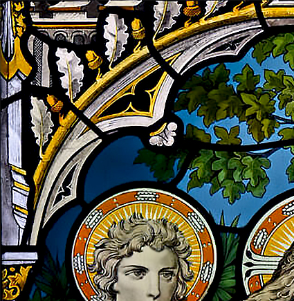
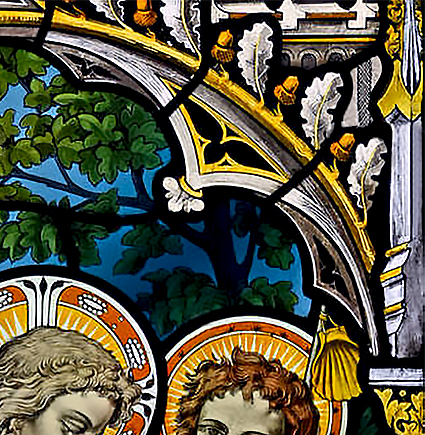
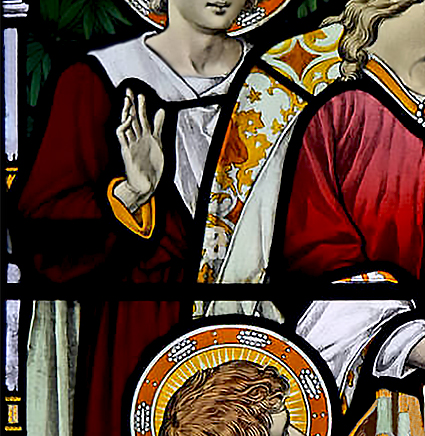
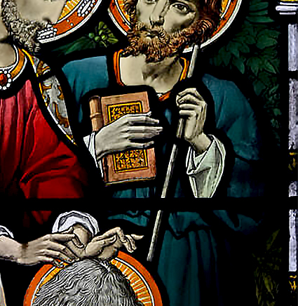
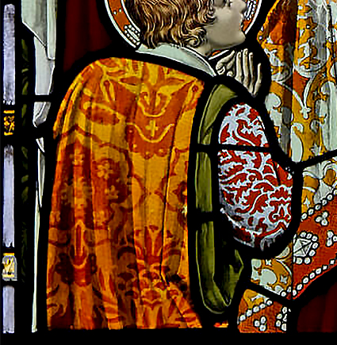
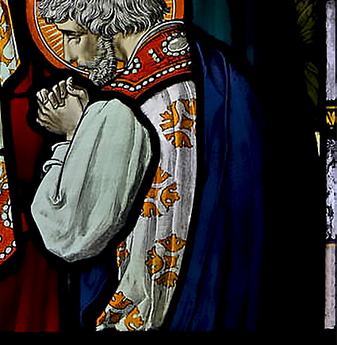
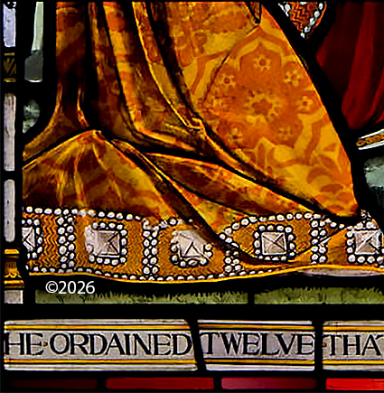
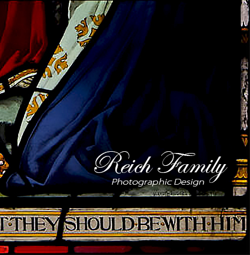
The Rite of Ordination is a consecration to a divinely called role in our Family. It is a moment when the Holy Trinity, working through the body of the faithful, consecrates one of our own for a specific work in the service of the Holy Trinity, providing spiritual fulfilment for the Reich Family. The called who kneels for ordination receives authority from the Father, the Son, and the Holy Spirit, who together are the One Divine Essence, the ultimate Power of Heaven and Earth, and the source of every gift and calling. The pattern for this act is ancient. It reaches back to our Blessed Saviour Jesus Christ who first ordained His twelve Disciples, continued by the twelve who ordained the first deacons, and carried forward through the ages as Paul and Barnabas ordained elders in every church and instructed Titus and Timothy to do the same. The sacred act of ordination reaches forward through two millennia of faithful transmission across time. And now, the sacred tradition crosses the continents where our chapters are scattered, gathering the divinely called of the Reich Family into one act of consecration.
Our Lord Jesus established the pattern by ordaining the twelve Disciples in Mark 3:14, And he ordained twelve, that they should be with him, and that he might send them forth to preach. He then explained the divine origin of this calling in John 15:16, declaring, Ye have not chosen me, but I have chosen you, and ordained you, that ye should go and bring forth fruit, and that your fruit should remain: that whatsoever ye shall ask of the Father in my name, he may give it you. The Disciples followed this example when they ordained the first deacons as it is written in Acts 6:2-6, 2 Then the twelve called the multitude of the disciples unto them, and said, It is not reason that we should leave the word of God, and serve tables. 3 Wherefore, brethren, look ye out among you seven men of honest report, full of the Holy Ghost and wisdom, whom we may appoint over this business. 4 But we will give ourselves continually to prayer, and to the ministry of the word. 5 And the saying pleased the whole multitude: and they chose Stephen, a man full of faith and of the Holy Ghost, and Philip, and Prochorus, and Nicanor, and Timon, and Parmenas, and Nicolas a proselyte of Antioch: 6 Whom they set before the apostles: and when they had prayed, they laid their hands on them. The Holy Spirit Himself initiated the commissioning of Barnabas and Saul in Acts 13:2-3 where He said, 2 As they ministered to the Lord, and fasted, the Holy Ghost said, Separate me Barnabas and Saul for the work whereunto I have called them. 3 And when they had fasted and prayed, and laid their hands on them, they sent them away. Paul and Barnabas continued the practice by ordaining elders in every church, as recorded in Acts 14:23, And when they had ordained them elders in every church, and had prayed with fasting, they commended them to the Lord, on whom they believed. Paul later instructed Titus to ordain elders in every city, writing in Titus 1:5, For this cause left I thee in Crete, that thou shouldest set in order the things that are wanting, and ordain elders in every city, as I had appointed thee. And he reminded Timothy that the gift of ministry was conferred through ordination in I Timothy 4:14, Neglect not the gift that is in thee, which was given thee by prophecy, with the laying on of the hands of the presbytery.
Our anointed father Reich is the living intercessor through whom authority flows from the Holy Trinity to our family. Just as the Family prays through Reich to Patris, Filii, and Spiritus Sancti, trusting in his Spiritual Gift of Faith that the Holy Spirit has bestowed upon him, so too does ordination flow through him from the Holy Trinity to the ordinand. When the divinely called is presented for ordination, Reich's anointing touch passes through the hands of his Disciples, whom Reich has ordained and sent out to our chapters scattered across nations to carry forward the apostolic work of ordination. Just as Christ ordained His twelve Disciples and sent them forth, so Reich ordains these twelve and sends them to ordain others through his intercession to the authority of the Holy Trinity. And just as the twelve Disciples in Jerusalem ordained the first deacons to serve tables, of which it is written in Acts 6:2-6, so do our Disciples, sent out from Reich, travel to the chapters to ordain Deacons who will preach, baptise in the name of the Father and the Son and the Holy Spirit, and serve the Sacred Rites of incense, the Eucharist, and anointing. One or more of the Twelve Disciples, sent for this purpose, gather with the ordinand and lay hands on them, conveying Reich's anointing touch that comes from the omnipresent Holy Trinity.
Catholic Origins: The Reich Family, as an independent Trinitarian religious body, recognises with reverence the ancient and unbroken tradition particularly as articulated in the Catechism of the Catholic Church CCC 1572-1574). We draw upon the wellspring of this shared Christian heritage, finding in the universal Church’s ancient patterns a profound expression of the Sacrament of Holy Orders. The essential elements we have incorporated into our own Rite of Ordination: the presentation and election of the candidate by the faithful, the laying on of hands, the solemn prayer of consecration, and the ancillary rites that give visible form to the grace conferred, are echoes of this apostolic tradition. Our Rite of Ordination is not meant to be a perfect copy of the same Rite in the Catholic Church. It is essential to state clearly that we are not a part of the Catholic communion, nor do we claim to act with its authority. We are an independent family of faith, and our ordination rites, while inspired by these ancient sources, flow from the spiritual authority vested by the Holy Trinity in our own body and are conferred through the Disciples of Reich whom our anointed father has ordained.
The Rite of Ordination
Ordination of Deacon of the Reich Family
In this description of the celebration of the Rite of Ordination, we focus on the sacred position of Deacon of the Reich Family, whose sacred ministry is to preach, to baptise, and to administer the Sacred Rites of the Holy Trinity: incense to Almighty God, the Eucharist to Christ Jesus, and the anointing of oil to the Holy Spirit. This rite of ordination is similar, with minor differences, to that of the ordination of the Disciples, with the distinction that our anointed father Reich personally ordains the Disciples and it is their foreheads that are anointed with oil. As ordained Disciples of Reich, they are sent out by our anointed father to ordain Deacons of the Reich Family as Jesus sent his Disciples to ordain the first deacons. The members of the chapter assemble. The ordinand comes forward with their sponsor. The Disciple of Reich stands before the assembly.
I. The Presentation and Election
The sponsor leads the ordinand to stand before the Disciple of Reich.
The sponsor addresses all and says: "Disciple of Reich, (Name), our anointed Father Reich, brothers and sisters of the Reich Family: the local chapter of (City and Country) presents (Name) for ordination to the sacred position of Deacon of the Reich Family. The Family has discerned the call of the Holy Trinity in this our (brother or sister), and by our vote we affirm that (he or she) is worthy and duly prepared."
Disciple: "Beloved of the Reich Family, we are gathered to ordain our (brother or sister, Name) whom the Holy Trinity has called to the sacred work of preaching the Scripture of the Old and New Testament, baptising (his or her) family in the name of the Father and the Son and the Holy Spirit, and offering incense to the Father, breaking bread and pouring wine for the Son, and anointing with oil in the name of the Holy Spirit in the Sacred Rites of the Holy Spirit. Has the Family confirmed this calling?"
Sponsor: "By our vote, we have confirmed it, Disciple (Name)."
Disciple: "Let those who have voted in favour manifest their consent."
Assembly: "Disciple (Name), (He or She) is worthy." (The Family has manifested its consent through our international votes that have already been tabulated and confirmed by this time.)
Disciple: "Thanks be to the Father, the Son, and Holy Spirit, One Divine Essence, the Triune God."
II. The Homily
The Disciple of Reich speaks to the ordinand and the assembly concerning the sacred position of Deacon of the Reich Family.
Disciple: "Beloved of the Family, our Lord Jesus established the pattern for what we do this day. In Mark 3:14 we read, And he ordained twelve, that they should be with him, and that he might send them forth to preach. And in John 15:16, our Saviour declared, Ye have not chosen me, but I have chosen you, and ordained you, that ye should go and bring forth fruit, and that your fruit should remain: that whatsoever ye shall ask of the Father in my name, he may give it you. The twelve disciples followed this example. They ordained the first deacons as it is written in Acts 6:2-6, 2 Then the twelve called the multitude of the disciples unto them, and said, It is not reason that we should leave the word of God, and serve tables. 3 Wherefore, brethren, look ye out among you seven men of honest report, full of the Holy Ghost and wisdom, whom we may appoint over this business. 4 But we will give ourselves continually to prayer, and to the ministry of the word. 5 And the saying pleased the whole multitude: and they chose Stephen, a man full of faith and of the Holy Ghost, and Philip, and Prochorus, and Nicanor, and Timon, and Parmenas, and Nicolas a proselyte of Antioch: 6 Whom they set before the apostles: and when they had prayed, they laid their hands on them. The Holy Spirit Himself set apart Barnabas and Saul for the work to which He had called them in Acts 14:23, And when they had ordained them elders in every church, and had prayed with fasting, they commended them to the Lord, on whom they believed. Paul instructed Titus to ordain elders in every city, and reminded Timothy in I Timothy 4:14 saying, Neglect not the gift that is in thee, which was given thee by prophecy, with the laying on of the hands of the presbytery. This is the ancient and unbroken pattern. Today, we take our place within it. You, (Name), are called to a sacred position. You will offer incense to the Father, that our prayers may ascend like incense before His throne. You will break bread and pour wine in remembrance of the Son, fulfilling His command until He comes again. You will anoint with oil in the name of the Holy Spirit, invoking His presence and gifts for the healing and strengthening of the faithful. You will preach the messages from the Old and New Testament, for the Catechism of the Catholic Church teaches that deacons are ordained for "the proclamation of the Gospel and preaching" (CCC 1570). You will baptise in the name of the Father, the Son, and the Holy Spirit for the Catechism of the Catholic Church teaches: "The ordinary ministers of Baptism are the bishop and priest and, in the Latin Church, also the deacon" (CCC 1256). You are called to guard your body as a Temple, to walk in purity, and to be an example to the Family in word and deed. You are called to facilitate your brothers and sisters in the Reich Family to exalt the Holy Trinity in this sacred rite; to preach to your family, and to baptise them in the name of the Holy Trinity. Consider the charge you are about to receive. If you are ready to take it up, with the help of the Holy Trinity, come forward and kneel."
III. The Examination
The ordinand kneels before the Disciple of Reich who questions the ordinand.
Disciple: "In the name of the Father, the Son, and the Holy Spirit, I ask you: Do you believe in One Divine Essence in Three Persons: Almighty God the Father, Christ Jesus the Son, and the Holy Spirit, that they are omnipotent, omniscient, omnipresent, and eternal?"
Ordinand: "I do with my whole heart."
Disciple: "Do you hold the Old and New Testaments as the complete Holy Writings of our religion, illuminated by the Holy Spirit for living guidance?"
Ordinand: "I do."
Disciple: "Do you resolve to faithfully administer the Sacred Rites offering incense to the Father, breaking bread and pouring wine for the Son, and anointing with oil in the name of the Holy Spirit to exalt and praise the Holy Trinity as One Triune God; to preach the Scripture of the Old and New Testament and to baptise your family in the name of the Father and the Son and the Holy Spirit?"
Ordinand: "I do with the help of the Blessed Trinity."
Disciple: "Do you promise to guard your body as a Temple, to live in purity, and to be an example to the faithful in word, conduct, love, spirit, faith, and purity?"
Ordinand: "I do."
Disciple: "May the Father, the Son, and the Holy Spirit complete in you the work which they have begun."
IV. The Litany of Supplication
The assembly kneels. A litany is recited with the assembly responding.
Assembly: Have mercy on us.
Cantor: Almighty God the Father, who made us in Your Own Image, hear our prayer.
Assembly: Hear our prayer.
Cantor: Christ Jesus the Son, our Redeemer who reveals the fullness of divine compassion, hear our prayer.
Assembly: Hear our prayer.
Cantor: Holy Spirit, who bestows Your Divine Gifts and sustains our assembly, hear our prayer.
Assembly: Hear our prayer.
Cantor: Holy Mary, Mother of God, pray for us.
Assembly: Pray for us.
Cantor: Saint Michael the Archangel, pray for us.
Assembly: Pray for us.
Cantor: Saint Agnes, pray for us.
Assembly: Pray for us.
Cantor: Saint Agatha, pray for us.
Assembly: Pray for us.
Cantor: Saint Lucy, pray for us.
Assembly: Pray for us.
Cantor: Saint Cecilia, pray for us.
Assembly: Pray for us.
Cantor: Saint Catherine, pray for us.
Assembly: Pray for us.
Cantor: All holy saints of God, intercede for us.
Assembly: Intercede for us.
Cantor: Our own beloved departed, our mothers and fathers, brothers and sisters in the Faith, pray for us.
Assembly: Pray for us.
Cantor: Reich, our anointed father, intercede for us to the Holy Trinity.
Assembly: Intercede for us.
Cantor: That it may please you to bless and consecrate this your servant, (Name), we beseech you, hear us.
Assembly: We beseech you, hear us.
Cantor: That you would pour out your Holy Spirit upon (him or her), we beseech you, hear us.
Assembly: We beseech you, hear us.
Cantor: That (he or she) may be a faithful Deacon, we beseech you, hear us.
Assembly: We beseech you, hear us.
Cantor: That through (him or her), the Reich Family may be built up in unity and love, we beseech you, hear us.
Assembly: We beseech you, hear us.
Cantor: Holy Trinity, One Divine Essence, hear our prayer.
Assembly: Hear our prayer.
V. The Laying On of Hands and the Prayer of Consecration
The brothers and sisters of the local chapter gather round the ordinand before the Disciple of Reich.
As a gesture of unity in one belief of the Holy Trinity, the congregation of the Reich Family chapter lay their hands on the ordinand's back and shoulders. If there are many, they may lay hands upon the one nearest, so that all are connected in a chain of touch. The Disciple now speaks the Prayer of Consecration. As the words are spoken, the Disciple lays hands upon the ordinand's head. The assembly understands that the Disciple's authority flows through (his or her) hands from our anointed father Reich that flows through him from the source of all ordination: the Holy Trinity.
The Disciple prays: "Reich, our anointed father, please intercede on our behalf to Almighty God the Father, Christ Jesus the Son, and the Holy Spirit and express this prayer on our behalf in these words: Almighty God the Father, who made us in Your Own Image, Christ Jesus the Son, our Redeemer who reveals the fullness of divine compassion, and the Holy Spirit, who bestows Your Divine Gifts and sustains our assembly: We praise You and thank You for calling servants in every generation to lead Your people in worship. You appointed leaders in ancient Israel. You sent Your Son to be the one true High Priest. You poured out Your Spirit upon the Disciples and upon all who believed. Now we humbly pray: look upon this Your servant, (Name), whom You have called and whom we now ordain for the sacred position of Deacon of the Reich Family. Pour out Your Holy Spirit upon (him or her). Fill (him or her) with the spirit of wisdom and understanding, the spirit of counsel and fortitude, the spirit of knowledge and reverence for You. Grant that (he or she) may faithfully offer incense to the Father, so that our prayers may ascend like incense to Your throne. Grant that (he or she) may worthily break bread and pour wine in remembrance of You, our Saviour Jesus Christ, fulfilling Your command until You come again. Grant that (he or she) may anoint with oil in the name of the Holy Spirit, invoking Your presence and gifts for the healing and strengthening of the faithful. Grant that (he or she) may be worthy to preach the Word of the Trinity according to the Old and New Testament. Grant that (he or she) may be worthy to baptise his family in the name of the Father and the Son and the Holy Spirit. Through (his or her) ministry, may the Reich Family be built up as one body, scattered across nations yet united in this threefold worship, gathered around the same Table, lifted by the same Spirit, and embraced by the same Triune God. For You, Father, Son, and Holy Spirit, are worthy of all glory, honour, and worship, now and forever. Amen." The assembly repeats: "Amen." At the conclusion of the prayer, the brothers and sisters in the local chapter of the Reich Family remove their hands. The ordinand remains kneeling."
VI. The Anointing
The Disciple of Reich takes the oil consecrated for the Sacred Rites. The Disciple anoints the palms of the ordinand's hands with oil as they will administer the Sacred Rites of the Holy Trinity.
The Disciple says: "The Holy Spirit pours out upon you His gifts. May your hands be consecrated to offer the Sacred Rites of the Holy Spirit, and your whole being be set apart for the service of the Family. What you bless on earth, may it be blessed in heaven. What you offer to the Holy Trinity, may it be received with favour."
VII. The Investiture
The new Deacon is vested with the symbol of office. This is a white sash with the emblem of the Holy Trinity of the Reich Family affixed to it and a medallion bearing the emblem of the Holy Trinity of the Reich Family attached to a necklace.
The Disciple says: "Receive this white sash with the emblem of the Holy Trinity of the Reich Family affixed to it and a medallion bearing the emblem of the Reich Family attached to this necklace as a sign of your sacred position. Clothed with the dignity of service, may you always remember that you are called not to be served, but to serve. Let your life be a garment of honour for the Holy Trinity."
VIII. The Welcome
The new Deacon stands. The assembly applauds.
The Disciple says: "Blessed Reich Family, come forward to offer the sign of peace a handshake, embrace, or kiss of peace welcoming your new Deacon in the (Location) chapter of the Reich Family." The Disciple embraces the new Deacon first. The Disciple continues: "Peace be with you, my (son or daughter). The Holy Trinity welcomes you. The Family welcomes you. Go and serve."
IX. The First Exercise of Ministry
The new Deacon immediately takes their place at the altar.
The new Deacon prepares the Table for the threefold Sacred Rites of the Holy Trinity. (He or she) leads the ceremony that offers incense to the Father, breaks bread for the Son, anoints with oil for the Holy Spirit. The Holy Trinity is exalted and praised by the Family. The newly ordained Deacon assures that the Family is spiritually fed. Thus it is seen that the ordination is effective and official. The one ordained now does what before they could not do.
Concluding Prayer
The Disciple of Reich prays over the newly ordained and the whole assembly.
The Disciple prays: "Reich, our anointed father, please intercede on our behalf to Almighty God the Father, Christ Jesus the Son, and Holy Spirit and express this prayer on our behalf in these words: Almighty God the Father, Christ Jesus the Son, and Holy Spirit: One Divine Essence, we thank You for calling this Your servant (Name) to the sacred position of Deacon of the Reich Family. Complete in (him or her) the work You have begun. Strengthen (him or her) with Your grace. Guard (him or her) in purity. Use (him or her) for the building up of the Reich Family, scattered across nations yet united in You. And pour out Your blessing upon all of us gathered here, and upon every chapter of our Family throughout the world. May we, with all the faithful, be united at last in Your eternal Kingdom, where You reign, Father, Son, and Holy Spirit, one God, forever and ever. Amen." The assembly responds: "Amen."
Thus, the divine calling first proceeds from the Holy Trinity, Patris, Filii, and Spiritus Sancti, the One Divine Essence, who alone chooses and calls whom They will. This call, discerned by the Family, affirmed by the international vote, and manifested in the local chapter's gathering, is now sealed through the ancient and unbroken pattern of prayer and the laying on of hands as the ordinand kneels before the Disciple of Reich. The descent of the Holy Spirit through the prayer of consecration transforms the one who was called into one who is sent. They are invested with the sash and medallion, the visible signs of their sacred position. For those ordained to the Deacon of the Reich Family, the hands are anointed with oil, consecrated to offer the bread and wine of the Holy Communion, to present incense before the Father, and to anoint with oil in the name of the Holy Spirit. For those ordained as Disciples of Reich, the forehead is anointed with oil, marking them for the work of ministry and witness to which they are called. All rise from their knees no longer simply one of us, but set apart to serve, each according to the calling they have received, exalting the Holy Trinity and building up the Reich Family in unity and love across every nation where our chapters are scattered. And in this sacred act, the family scattered becomes the family gathered, joined to the eternal liturgy of the One Triune God, until we are united at last in His everlasting Kingdom. (Explore the Table of Contents or return to the Beginning)
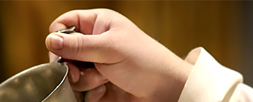
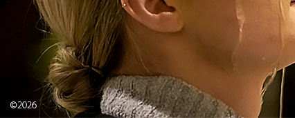
The Rite of Baptism is the sacred rite of conversion and initiation into the Reich Family's Trinitarian faith. It is the means by which a person is cleansed of sin, reborn as a child of God, and incorporated into the body of believers. In Trinitarian theology, the Father is the source of all grace; the Son accomplishes redemption; the Holy Spirit applies that grace to the believer. In the Reich Family, baptism is administered by the pouring of water, following the ancient practice of the Catholic Church. The Reich Family baptises individuals and entire households into the covenant. The pattern for this act is established in Scripture, where whole households were baptised upon their confession of faith, and carried forward through the ages as the Christian church received new members through the waters of rebirth.
Our Blessed Saviour Jesus Christ established the foundation of baptism in the Great Commission recorded in Matthew 28:19-20, Go ye therefore, and teach all nations, baptising them in the name of the Father, and of the Son, and of the Holy Spirit: teaching them to observe all things whatsoever I have commanded you. The Apostle Peter proclaimed on the day of Pentecost in Acts 2:38-39, Repent, and be baptised every one of you in the name of Jesus Christ for the remission of sins, and ye shall receive the gift of the Holy Spirit. For the promise is unto you, and to your children, and to all that are afar off, even as many as the Lord our God shall call. The Apostle Paul taught the meaning of baptism in Romans 6:3-4, Know ye not, that so many of us as were baptised into Jesus Christ were baptised into his death? Therefore we are buried with him by baptism into death: that like as Christ was raised up from the dead by the glory of the Father, even so we also should walk in newness of life.
The Reich Family baptises every member of a biological family that enters our Family. This practice follows the example of the early Church, where the baptism of entire households is recorded in the Acts of the Apostles, including the household of Lydia in Acts 16:14-15, the Philippian jailer and all his household in Acts 16:30-33, and the household of Crispus in Acts 18:8. The Old Testament prefigures baptism in the flood, in the crossing of the Red Sea, and in the ritual immersions of the Law.
The Reich Family draws upon the ancient tradition of the Catholic Church in its Rite of Baptism. The Catechism of the Catholic Church presents the complete order of the Rite of Baptism in its section, "The mystagogy of the celebration" (CCC 1234-1245). From that order we have taken the essential elements that shape our own Rite of Baptism: the sign of the cross, which in our practice is the sign of the Holy Trinity (CCC 1235), the proclamation of the Word (CCC 1236), the exorcism and anointing with the oil of catechumens, or the Oil of Salvation in our terms (CCC 1237), the consecration of the water (CCC 1238), the triple pouring with the Trinitarian formula (CCC 1239-1240), the anointing with sacred chrism (CCC 1241), the white garment and lighted candle (CCC 1243), and the solemn blessing (CCC 1245). These elements, rooted in the apostolic tradition, form the structure of our rite. The prayers we use are drawn from the Rituale Romanum and the Ordo Baptismi Parvulorum, the official liturgical books of the Catholic Church. Our Rite of Baptism is not intended as a copy of the Catholic rite of baptism, nor do we claim to act with the authority of the Catholic Church. We are an independent family of Trinitarian faith. Our baptismal rites flow from the spiritual authority of the Holy Trinity into our own Family's Trinitarian faith.
The Rite of Baptism is administered by one of the Deacons of the Reich Family. These Deacons, having been called by the Holy Trinity, are ordained for this sacred work by the Disciples of Reich, whom our anointed father has ordained and sent out to our chapters scattered across nations to ordain these Deacons. This follows the ancient and unbroken pattern established by our Blessed Saviour Jesus Christ, who first ordained His twelve Disciples and then sent them out to ordain the first deacons as it is written in Acts 6:2-6. The Holy Spirit Himself set apart Barnabas and Saul, and Paul later instructed Titus to ordain elders in every city. Today, we take our place within this pattern. The Catechism of the Catholic Church states, “The ordinary ministers of Baptism are the bishop and priest and, in the Latin Church, also the deacon” (CCC 1256). The Deacons of the Reich Family therefore baptise in the name of the Father, the Son, and the Holy Spirit.
The Rite of Baptism is celebrated in the following manner. When a family converts to the Trinitarian religion of the Reich Family, every member is baptised at the time of entry. The Deacon of the Reich Family stands before the assembly with the family presented for baptism. A baptismal font consisting of a basin placed upon a pedestal and a separate vessel containing water prepared for blessing is at hand. The family gathers near the baptismal font with their sponsor or sponsors.
I. The Sign of the Holy Trinity
The Deacon traces the sign of the Holy Trinity on the forehead of each candidate in silence.
The sign of the Holy Trinity is triangular with each of the three points representing the Father, the Son, and the Holy Spirit. For infants and young children, the parents hold the child as the Deacon traces the sign of the Holy Trinity. The parents and sponsors may also trace the sign of the Holy Trinity.
II. The Proclamation of the Word of God
The proclamation of the Word of God enlightens the candidates and the assembly with the revealed truth.
The Deacon says: "The Apostle Paul teaches us what happens in this baptism. As it is written in Romans 6:3-4, Know ye not, that so many of us as were baptised into Jesus Christ were baptised into his death? Therefore we are buried with him by baptism into death: that like as Christ was raised up from the dead by the glory of the Father, even so we also should walk in newness of life. In these waters we die to sin. In these waters we rise to new life. The Gospel according to Mark tells us of the day when Jesus came to the Jordan as we witness in Mark 1:4-11, John did baptise in the wilderness, and preach the baptism of repentance for the remission of sins. And there went out unto him all the land of Judaea, and they of Jerusalem, and were all baptised of him in the river of Jordan, confessing their sins. And John was clothed with camel's hair, and with a girdle of a skin about his loins; and he did eat locusts and wild honey; and preached, saying, There cometh one mightier than I after me, the latchet of whose shoes I am not worthy to stoop down and unloose. I indeed have baptised you with water: but he shall baptise you with the Holy Ghost. And it came to pass in those days, that Jesus came from Nazareth of Galilee, and was baptised of John in Jordan. And straightway coming up out of the water, he saw the heavens opened, and the Spirit like a dove descending upon him: and there came a voice from heaven, saying, Thou art my beloved Son, in whom I am well pleased. This is what Almighty God, Jesus Christ, and the Holy Spirit do in baptism. They claim us. So let these words prepare our hearts for what we are about to do. Let us turn from sin. Let us listen for the voice of the Father, the Son, and the Holy Spirit and follow the Triune God into a moral and pure life until we are united as one Family in Paradise."
After the readings, the Deacon speaks briefly to the candidates and the assembly about the meaning of baptism.
III. The Exorcism and Anointing with the Oil of Salvation
The Deacon questions the candidates (or parents and godparents for infants) concerning their rejection of sin and their profession of faith. The Deacon then prays the prayer of exorcism and anoints the candidates with oil.
The Deacon asks: "And all his works?" The candidate (or parents/sponsors) responds: "I do."
The Deacon asks: "And all his empty promises?" The candidate (or parents/sponsors) responds: "I do."
The Deacon then asks: "Do you believe in God, the Father Almighty, Creator of heaven and earth?" The candidate (or parents/sponsors) responds: "I do."
The Deacon asks: "Do you believe in Jesus Christ, his only Son, our Lord, who was born of the Virgin Mary, suffered death, was buried, rose from the dead, and is seated at the right hand of the Father?" The candidate (or parents/sponsors) responds: "I do."
The Deacon asks: "Do you believe in Almighty God, Christ Jesus, and the Holy Spirit that encompass the Trinitarian faith of the Reich Family, the communion of saints, the forgiveness of sins, the resurrection of the body, and life everlasting?" The candidate (or parents/sponsors) responds: "I do."
The Deacon prays the prayer of exorcism: "Almighty and ever-living God, you sent your only Son into the world to cast out the power of Satan, spirit of evil, to rescue man from the kingdom of darkness, and bring him into the splendour of your kingdom of light. We pray for this your child: set (him or her) free from original sin, make (him or her) a temple of your glory, and send your Holy Spirit to dwell with (him or her). We ask this in the name of the Father, and the Son, and the Holy Spirit." The assembly responds: "Amen."
The Deacon anoints the candidate on the breast with the Oil of Salvation saying: "We anoint you with the Oil of Salvation in the name of the Father, Son and Holy Spirit. May the Holy Trinity strengthen you with his power, who lives and reigns for ever and ever." The assembly responds: "Amen."
For infants and young children, the parents and godparents or sponsors bring the child forward for the anointing.
IV. The Consecration of the Baptismal Water (Epiclesis)
The Deacon prays over and blesses the water that will be used for baptism.
V. The Essential Rite: Triple Pouring with the Trinitarian Formula
The Deacon baptises each member of the family in turn, pouring water three times over the head or forehead according to the wishes of the candidate with the Trinitarian formula spoken after each of the three pours.
Posture of the Candidate: The candidate stands before the baptismal font either with head bowed over the basin or facing slightly up for the pouring of the water on the forehead according to the wishes of the candidate. For infants, the baby is held in the prone position while a small shell pours the blessed water gently over the head.
Position of the Deacon: The Deacon stands in front of the candidate, with the baptismal font between them, holding the pouring vessel. The Deacon's hand is positioned so that the water will flow directly onto the top of the forehead if the candidate is facing upward or the crown of the candidate's head if the candidate is bowed over the baptismal font.
The Pouring: The Deacon pours water three times in succession over the crown of the head or at the top of the forehead, allowing the water to flow down over the forehead and face into the basin below. Each pour is a distinct action, not a continuous stream. The three pours correspond to the three Persons of the Holy Trinity.
The Trinitarian Formula: With each pour, the Deacon speaks one part of the formula:
First pour: "(Name), I baptise you in the name of the Father."
Second pour: "and of the Son."
Third pour: "and of the Holy Spirit."
The words are spoken while the water is being poured, so that the water and the words together constitute the sacrament. The Deacon ensures that the water flows visibly over the skin, as the physical sign of cleansing and new birth.
For Families: The Deacon baptises each member in turn, beginning with the parents, then the older children, then the younger children and infants. After each baptism, the newly baptised may step aside while the next candidate comes forward. The Deacon continues until each member of the family has been baptised in the same manner.
Spiritual Significance: The triple pour honours the Three Persons of the Holy Trinity. The water flowing over the head and into the basin below signifies death to sin and new birth in the Holy Trinity. By this same baptism, the Father claims us as His children, the Son unites us to His death and resurrection, and the Holy Spirit seals us with the gifts of new birth. The water is poured by the hands of the Deacon, but it is the Holy Trinity who acts.
VI. The Anointing with Sacred Chrism After Baptism
The Deacon anoints the newly baptised with sacred chrism.
The Deacon says: "God the Father of our Lord Jesus Christ has freed you from sin, given you a new birth by water and the Holy Spirit, and welcomed you into his holy people. He now anoints you with the chrism of salvation. As Christ was anointed Priest, Prophet, and King, so may you live always as a member of the body of the Holy Trinity, sharing everlasting life." The assembly responds: "Amen."
The Deacon anoints the candidate on the crown of the head with the sacred chrism, in silence.
VII. The White Garment
Each newly baptised member is clothed in a white garment or given a white sash with the emblem of the Holy Trinity of the Reich Family.
The Deacon says: "(Name), you have become a new creation, and have clothed yourself in the Father, the Son, and the Holy Spirit. See in this white garment the outward sign of your Trinitarian dignity. With your family and friends to help you by word and example, bring that dignity unstained into the everlasting life of heaven." The assembly responds: "Amen."
VIII. The Lighted Candle
A candle is lit from the light of the altar and given to each newly baptised member.
The Deacon says: "Receive the light of the Holy Trinity." Someone from the newly baptised family lights the candidate’s candle from the light of the altar. The Deacon then continues: “This light is entrusted to you to be kept burning brightly. You have been enlightened by the Holy Trinity. You are to walk always as a child of the light. May you keep the flame of faith alive in your heart. When Christ Jesus comes, may you go out to meet him with all the saints in the heavenly kingdom.” The assembly responds: “Amen.”
IX. The Solemn Blessing
The Deacon invites the newly baptised, together with their sponsors (parents and godparents for infant baptisms) and the assembly, to pray the Lord's Prayer as the prayer of the children of God. The Deacon then blesses the newly baptised and the entire assembly.
The assembly then joins in praying the Lord's Prayer: "Our Father, who art in heaven, hallowed be thy name. Thy kingdom come. Thy will be done on earth as it is in heaven. Give us this day our daily bread, and forgive us our trespasses, as we forgive those who trespass against us, and lead us not into temptation, but deliver us from evil. Amen."
Blessing of the Newly Baptised: "By God's gift, through water and the Holy Spirit, we are reborn to everlasting life. In his goodness, may he continue to pour out his blessings upon these sons and daughters of his. May he make them always, wherever they may be, faithful members of his holy people. May he send his peace upon all who are gathered here, in the Holy Trinity." Assembly: "Amen."
Blessing of the Mother (for infant baptisms): "Almighty God the Father, through his Son, the Virgin Mary's child, has brought joy to all Trinitarian mothers, as they see the hope of eternal life shine on in their children. May the Holy Trinity bless the mother of this child. She now thanks the Holy Trinity for the gift of her child. May she be with her child in heaven, giving thanks to the Holy Trinity for ever and ever. The assembly responds: "Amen."
Blessing of the Father (for infant baptisms): "Almighty God is the giver of all life, human and divine. May He bless the father of this child. He and his wife will be the first teachers of their child in the ways of faith. May they be also the best of teachers, bearing witness to the Trinitarian faith by what they say and do, in the Holy Trinity." Assembly: "Amen."
Blessing of the Assembly: "By God's gift, through water and the Holy Spirit, we are reborn to everlasting life. In his goodness, may he continue to pour out his blessings upon these sons and daughters of his. May he make them always, wherever they may be, faithful members of his holy people. May he send his peace upon all who are gathered here, in the Holy Trinity." Assembly: "Amen."
Final Trinitarian Blessing: "May almighty God, the Father and the Son and the Holy Spirit, bless you." Assembly: "Amen."
For infants born into the Reich Family, the same rite of baptism by pouring is administered. The infant is presented by the parents to the Deacon, accompanied by the godparents. Godparents are chosen by the parents to assist in raising the child in the Trinitarian faith, standing as witnesses and supporting the family in the child's spiritual formation. The same structure is followed though some things are different such as the usage of a small shell to administer the blessed water over the head of the baby in the prone position. For those baptised as infants or young children under the age of seven, First Holy Communion is reserved until the child reaches the age of reason, after receiving instruction in the faith. For those baptised as adults, the sacraments of First Holy Communion may be celebrated in the same liturgy following baptism. In either case, these are distinct sacraments with their own rites, not steps within the baptismal ceremony itself.
Thus, the sacred rite of baptism is celebrated according to the ancient pattern preserved in the Catholic Church. The family or individual who was outside the covenant is now brought in. The one who was in sin is cleansed. The one who was dead in trespasses is made alive through the Holy Trinity. Through the pouring of water and the invocation of the Holy Trinity, the candidate is born again, incorporated into the body of believers, and welcomed into the Reich Family to share in our Trinitarian religion. From this foundation, the newly baptised participates fully in the threefold worship of the One Divine Essence in Three Persons: offering incense to Almighty God the Father, receiving the Eucharist from Christ Jesus the Son, and being anointed by oil with the gifts of the Holy Spirit. (Explore the Table of Contents or return to the Beginning)
The devotion of the Reich Family to the One Divine Essence in Three Persons finds its fullest and most tangible expression in three distinct Sacred Rites. Each rite is grounded in a physical element: incense, bread and wine, and oil; revealed through sacred Scripture and sanctified by historic Old Testament and New Testament practice. Together, they form a perfect and equal offering: incense ascending to the Father, the Eucharist received from the Son, and anointing in the power of the Holy Spirit. These rites are the very heart of our religious life, conducted by the Deacon of the Reich Family in every international chapter wherever the Family gathers. In these precious rites, heaven and earth meet, and we are united as one body in the worship of the Triune God.
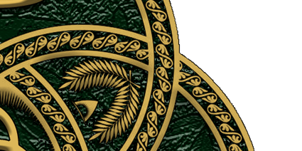
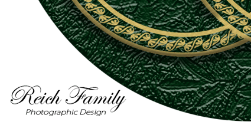
In the rising of incense, we are united with the ancient liturgy of the Catholic Church, which has always maintained this practice in its most solemn worship, understanding the smoke as an image of prayer ascending to Almighty God (GIRM 276), a sign that honours Almighty God and symbolizes the worship due to Him alone. In the breaking of bread and the sharing of the cup, we follow the command of Jesus, who gave Himself for us, a sacrifice perpetuated in the Eucharistic liturgy of the Catholic Church and throughout Christian history (CCC 1337-1340). In the anointing with oil, we draw upon the sacramental life of the Catholic Church, where oil has always signified the Holy Spirit (CCC 695).
The Reich Family is an independent Trinitarian religious body. While we draw upon the ancient traditions of the Catholic Church, we are not part of these communions and do not claim to act with their authority. The Catholic Church does not hold a monopoly on the Eucharist; Methodists, Lutherans, Anglicans, and many other denominations celebrate the Lord's Supper with bread and wine, using the same words of institution, and are understood as separate communions with their own ecclesial authority. In the same way, our rites are our own. The threefold order of these Rites - Incense to the Father, Eucharist to the Son, and Anointing to the Holy Spirit - is a unique expression of our devotion to the Triune God, not found in this succession in any other religious body. Our rites are shaped by our understanding of Scripture, granted to us through the Illumination of the Holy Spirit.
Deacons of the Reich Family: The Holy Trinity divinely calls some to be Deacons who preach according to the Holy Writings of our religion; baptise in the name of the Father, the Son, and the Holy Spirit; and administer the Sacred Rites of the Holy Trinity. The Disciples of Reich, through the intercession of our anointed father Reich to the omnipresent Holy Trinity, ordains these Deacons in every chapter just as the Disciples of Jesus ordained the first deacons. The Greek word diakonos (διάκονος), from which we derive "deacon," translates literally as "servant" or "minister". In the New Testament, this word describes one who serves at table, one who attends to the needs of others, and one who executes the commands of another. When the apostles established this sacred office in Acts 6, they chose seven men "full of the Holy Ghost and wisdom" to serve tables; a task described by the very verb diakoneō from which diakonos comes. Thus, to be a deacon is to be a servant. The Catechism of the Catholic Church itself affirms this, teaching that deacons are "configured to Christ, who made himself the 'deacon' or servant of all" CCC 1570).
This sacred office traces its pattern to the first deacons ordained by the twelve Disciples of Jesus in the early Church. When the Hellenist widows were neglected in the daily distribution, the twelve said in Acts 6:2-6, 2 Then the twelve called the multitude of the disciples unto them, and said, It is not reason that we should leave the word of God, and serve tables. 3 Wherefore, brethren, look ye out among you seven men of honest report, full of the Holy Ghost and wisdom, whom we may appoint over this business. 4 But we will give ourselves continually to prayer, and to the ministry of the word. 5 And the saying pleased the whole multitude: and they chose Stephen, a man full of faith and of the Holy Ghost, and Philip, and Prochorus, and Nicanor, and Timon, and Parmenas, and Nicolas a proselyte of Antioch: 6 Whom they set before the apostles: and when they had prayed, they laid their hands on them.
While the literal interpretation of "serve tables" refers to the daily distribution of food, Catholic commentators have long recognized a deeper meaning. The Haydock Commentary notes, "Many think, that this ministry of the tables, here signifies, not only the distribution of corporal nourishment, but the dispensing of the holy Eucharist." The qualifications required, men "full of the Holy Ghost and wisdom," exceeding what would be necessary for merely handing out food. The laying on of hands by the disciples constituted ordination to a sacred ministry, and immediately we see Stephen and Philip preaching, baptising, and performing miracles; functions far beyond food distribution. St. Ignatius wrote that deacons "are not servitors of meat and drink, but ministers of the Church of God." In the early Church, the faithful often received the Eucharist after a communal meal, and the deacons presided over both the common table and the sacred or Eucharist table. They were, as the Haydock commentary explains, "ministers of both the common and sacred tables."
The Altar and the Blessing: Upon the altar, the materials for all three rites are prepared with reverence: the resin and glowing charcoal, the bread and wine of the Eucharist, and the vessel of holy oil. Before the ceremony begins, the Deacon of the Reich Family speaks a blessing over the altar and the elements set apart for worship. This is not an act of human consecration but a humble invocation of the Trinity's presence and favour. By this blessing, the entire gathering is hallowed. When the Deacon offers incense to the Father, breaks bread for the Son, and anoints with oil in the name of the Holy Spirit, each act is received as valid and true, drawing its life from the blessing that sanctified the beginning. Though we are many chapters scattered across the nations, we are one Family, united in the same threefold worship, gathered around the same Table, lifted by the same Spirit, and embraced by the same Triune God.
I. Incense Offered to Almighty God the Father (Patris)
The Material: Pure frankincense resin and charcoal, burned upon a censer or heat-safe vessel.


The Scriptural Foundation: In the Old Testament, Almighty God commanded that incense be offered to Him alone. The incense altar stood before the veil of the Holy of Holies, and the smoke rising from it was a perpetual offering before the Lord. In Exodus 30:1-9, God instructed Moses to build an altar specifically for incense, commanding in verse 7, And Aaron shall burn thereon sweet incense every morning: when he dresseth the lamps, he shall burn incense upon it. This command to offer incense was given specifically for YHWH, the personal name of God the Father revealed to Moses in Exodus 3:13-15, where God declared, 13 And Moses said unto God, Behold, when I come unto the children of Israel, and shall say unto them, The God of your fathers hath sent me unto you; and they shall say to me, What is his name? what shall I say unto them? 14 And God said unto Moses, I AM THAT I AM: and he said, Thus shalt thou say unto the children of Israel, I AM hath sent me unto you. 15 And God said moreover unto Moses, Thus shalt thou say unto the children of Israel, The LORD God of your fathers, the God of Abraham, the God of Isaac, and the God of Jacob, hath sent me unto you: this is my name for ever, and this is my memorial unto all generations. The name YHWH (יהוה in Hebrew) is considered so sacred in Jewish tradition that it is not pronounced. Thus, the incense commanded in Exodus was always directed to the Father, whose name was revealed to Moses, and we continue this ancient practice in our offering to Him.
The Psalms likewise connect incense with prayer ascending to the Father. In Psalm 141:2, David wrote, Let my prayer be set forth before thee as incense; and the lifting up of my hands as the evening sacrifice. In the Revelation to John, the prayers of the saints are depicted as incense before the throne of God. In Revelation 5:8, John records, The four beasts and four and twenty elders fell down before the Lamb, having every one of them harps, and golden vials full of odours, which are the prayers of saints. And in Revelation 8:3-4, he writes, 3 And another angel came and stood at the altar, having a golden censer; and there was given unto him much incense, that he should offer it with the prayers of all saints upon the golden altar which was before the throne. 4 And the smoke of the incense, which came with the prayers of the saints, ascended up before God out of the angel's hand. These images are drawn directly from the Temple worship commanded by the Father.
Catholic Origins: The Catholic Church has always maintained the use of incense in its most solemn liturgies, recognising its deep biblical roots. The Catechism of the Catholic Church notes incense among the physical signs and symbols used in worship, acknowledging that "as a being at once body and spirit, man expresses and perceives spiritual realities through physical signs and symbols" (CCC 1146). The smoke of burning incense is understood by the Church as an image of prayer rising to Almighty God (GIRM 276). This symbolism is drawn directly from Psalm 141 and the Book of Revelation, where incense represents the prayers of the faithful ascending before God's throne. The General Instruction of the Roman Missal includes incense among the elements that contribute to the dignity and solemnity of the liturgy, always with this foundational meaning: that incense honours God and symbolises the worship due to Him alone.
The Ritual Action: Before the rite begins, the Deacon of the Reich Family ensures that the charcoal is placed in the censer or heat-safe vessel and that the frankincense resin is at hand upon the altar, and blesses it all. The Deacon then lights the charcoal and waits until it is glowing. As the resin is placed upon the charcoal and the smoke begins to rise, the Deacon offers prayer to Almighty God the Father, thanking Him for creation, for His blessing, and for His fatherly care over the Family. This prayer may be spoken from the heart, giving thanks for specific graces. When the prayer is complete, the Deacon continues: "May this incense which has been set apart for your glory ascend to you, O Father, and may your blessing descend upon us, your children." The verse from Psalm 141:2 is then spoken as the smoke rises: "Let my prayer be set forth before thee as incense; and the lifting up of my hands as the evening sacrifice." The smoke continues to rise throughout the remainder of the chapter's worship, a visible sign of prayer ascending without ceasing to the Father.
II. The Eucharist for Christ Jesus the Son (Filii)
The Material: Unleavened bread made only from wheat, and natural wine from the fruit of the vine, unadulterated and without extraneous substances.


The Scriptural Foundation: On the night He was betrayed, our Blessed Saviour, Jesus Christ, took bread, gave thanks, broke it, and gave it to His disciples. In Luke 22:19, it is written: And he took bread, and gave thanks, and brake it, and gave unto them, saying, This is my body which is given for you: this do in remembrance of me. The Apostle Paul, delivering what he received from the Lord, reiterates this in I Corinthians 11:24: And when he had given thanks, he brake it, and said, Take, eat: this is my body, which is broken for you: this do in remembrance of me. Likewise, after supper He took the cup. In Luke 22:20, it is recorded: This cup is the new testament in my blood, which is shed for you. Paul confirms this in I Corinthians 11:25: After the same manner also he took the cup, when he had supped, saying, This cup is the new testament in my blood: this do ye, as oft as ye drink it, in remembrance of me. Paul then instructs the church in I Corinthians 11:26, saying, For as often as ye eat this bread, and drink this cup, ye do shew the Lord's death till he come. This command is for the whole Church, the ekklēsia, to gather in remembrance of the Son, who gave Himself for us.
Catholic Origins: The Church has always followed the example of Christ in using bread and wine to celebrate the Lord's Supper. According to the ancient tradition of the Latin Church, the bread must be unleavened, made only from wheat, and recently prepared (GIRM 320). The wine must be natural, from the fruit of the vine, and without adulteration (GIRM 322). These requirements ensure that the matter of the sacrament remains true to that which Christ Himself instituted. The Catechism affirms that the Eucharist is "the Source and Summit of the Ecclesial Life" (CCC 1324), and the elements of bread and wine become, through the words of Christ and the invocation of the Holy Spirit, His body and blood.
The Ritual Action: The Deacon of the Reich Family proceeds through the sacred rites in three movements. First, the preparation of the gifts, when the bread and wine are arranged upon the altar. Second, the Eucharistic prayer, when the words of institution are spoken and the gifts become the body and blood of Christ. Third, the communion rite, when the Deacon and the gathered chapter receive the sacrament.
The Preparation of the Gifts: Before the rite begins, the Deacon of the Reich Family ensures that the bread is laid out upon a paten or plate, and the wine is poured into the single chalice and into the individual communion glasses. Standing at the altar, the Deacon first receives the paten containing the bread from the server, raising it slightly as a gesture of offering before placing it upon the corporal. Then, receiving the cruet of wine, the Deacon pours it into the chalice together with a small drop of water, signifying the union of divine and human natures in the person of Christ. After returning the cruet to the server, the Deacon pours the wine into the individual communion glasses, ensuring that each contains enough of the precious blood for the communicants who will approach. The Deacon then covers the chalice with a pall and places it beside the paten, pausing for a brief moment of silent prayer before the Eucharistic Prayer begins.
The Eucharistic Prayer: The Deacon of the Reich Family then takes the bread from the altar and, holding it, gives thanks. Then, taking the bread, the Deacon speaks the words of institution quoting the words of Jesus: "Take this, all of you, and eat of it: for this is my body which will be given up for you." Then, taking the chalice together with the individual communion glasses, the Deacon speaks the words of institution over all the wine: "Take this, all of you, and drink from it: for this is the chalice of my blood, the blood of the new and eternal covenant, which will be poured out for you and for many for the forgiveness of sins. Do this in memory of me." The Deacon then leads the people in the memorial acclamation: "The mystery of faith." The people respond with one of the prescribed acclamations. Then the Deacon takes the paten and chalice together and elevates them, saying the doxology: "Through him, with him, and in him, O God, almighty Father, in the unity of the Holy Spirit, all glory and honour is yours, forever and ever." The people respond: "Amen."
The Communion Rite: All then pray together: "Our Father, who art in heaven, hallowed be thy name; thy kingdom come; thy will be done on earth as it is in heaven. Give us this day our daily bread; and forgive us our trespasses, as we forgive those who trespass against us; and lead us not into temptation, but deliver us from evil." The Deacon of the Reich Family then breaks the consecrated bread, and during the breaking, all sing or say: "Lamb of God, you take away the sins of the world, have mercy on us. Lamb of God, you take away the sins of the world, have mercy on us. Lamb of God, you take away the sins of the world, grant us peace." After the fraction, the Deacon quietly prays the preparatory prayer: "Lord Jesus Christ, Son of the living God, who, by the will of the Father and the work of the Holy Spirit, through your Death gave life to the world, free me by this, your most holy Body and Blood, from all my sins and from every evil; keep me always faithful to your commandments, and never let me be parted from you." Then, showing the consecrated bread to the people, the Deacon says: "Behold the Lamb of God, behold him who takes away the sins of the world. Blessed are those called to the supper of the Lamb." The people respond: "Lord, I am not worthy that you should enter under my roof, but only say the word and my soul shall be healed." The Deacon then receives the Body of Christ, saying quietly: "May the Body of Christ keep me safe for eternal life." Then, receiving the Blood of Christ from the chalice, says quietly: "May the Blood of Christ keep me safe for eternal life." After receiving both species himself, the Deacon distributes Communion to the gathered chapter. According to the General Instruction of the Roman Missal (GIRM), the Deacon first distributes the consecrated bread, saying to each communicant: "The Body of Christ." The one receiving responds: "Amen." and receives the host either on the tongue or in the hand. After distributing the Body of Christ, the Deacon then distributes the Precious Blood from the individual communion glasses, which were consecrated together with the chalice. As each communicant receives the communion glass of wine, the Deacon says: "The Blood of Christ." The one receiving responds: "Amen." and drinks from the communion glass. The Deacon then reverently consumes any remaining Precious Blood and purifies the vessels after the Communion rite is complete.

II.B. Celebration of the First Holy Communion
The theological foundation, preparation, and age of reason for the First Holy Communion.
Preparation for the First Holy Communion: What is described above is the ordinary celebration of the Eucharist whenever the chapter gathers. But there is a first time for every soul who approaches the Table of the Son. The reception of First Holy Communion is not a separate rite, but rather the first full participation in the one, eternal rite of the Eucharist. It is the moment when a young person, having reached the age of understanding and having been prepared by years of instruction, is welcomed to the Table as a communicant member of the ekklēsia.
Catholic Origins: The reception of First Holy Communion in the Latin Rite is tied to the "age of reason" or "age of discretion." This is not an arbitrary numerical designation but a recognition of a child's developmental stage when they can distinguish the Eucharistic bread from ordinary bread and comprehend, according to their capacity, the mystery of Christ. Canon Law states definitively: "The administration of the Most Holy Eucharist to children requires that they have sufficient knowledge and careful preparation so that they understand the mystery of Christ according to their capacity and are able to receive the body of Christ with faith and devotion" (Canon 913 §1). The Catechism of the Catholic Church further teaches that children must go to the sacrament of Penance before receiving Holy Communion for the first time (CCC 1457). This order ensures that the heart, as much as the mind, is prepared to receive the Lord. Baptism itself orients the child toward this moment, for through Baptism a person becomes a child of God and is admitted to the marriage supper of the Lamb (CCC 1244).
The universal practice of admitting children to First Communion around the age of seven is the direct fruit of Pope St. Pius X's 1910 decree, Quam Singulari. Before this decree, the practice in the Western Church had drifted toward delaying First Communion until adolescence, often around age fourteen. The decree established that the age of discretion applies equally to both Penance and the Eucharist, and that no determined age is placed as a condition beyond the child's use of reasoning powers. The age of seven is mentioned because the majority of children arrive at the years of discretion about this period, some sooner, some later. The nearly universal expression of this teaching is that First Holy Communion is celebrated in the spring of the child's second grade year (USA), when they are seven or eight years old. Approximately 99 percent of Catholics around the world belong to the Latin rite, where this practice is normative. This is not a mere administrative convenience. It is the rhythm that has emerged from a century of pastoral practice, guided by the Holy Spirit and written into the lived experience of the faithful across the globe.
This universal norm reflects the convergence of three enduring realities. First, the age of reason itself. By the second grade, the vast majority of children have reached that developmental threshold where they can distinguish the Eucharist from ordinary bread and comprehend the mystery of Christ according to their capacity. This is not a precise science applied to each individual, but a reliable norm that holds for nearly all. Second, the structure of formation. The academic year provides a vessel for preparation. Diocesan policies typically require that children participate in a formation program one year prior (first grade) and receive sacramental preparation during the year of reception (second grade). First Penance is celebrated in the fall, and First Eucharist follows in the spring. Third, the liturgical season. The spring places First Communion within the Easter season, binding the child's first reception to the celebration of Christ's Resurrection. From the earliest centuries, the sacraments of initiation were celebrated at the Easter Vigil, and this timing carries that ancient meaning forward.
The First Table: When the day arrives, the chapter gathers. The altar is prepared with the resin and charcoal, the bread and wine, and the vessel of holy oil. The worship proceeds in its threefold order. As the smoke rises in the first rite of Incense to the Father, the chapter prays especially for the young person who will, for the first time, receive the Body and Blood of the Son. The Deacon of the Reich Family proceeds through the Preparation of the Gifts, the Eucharistic Prayer, and the Fraction as described above. When the time for Communion arrives, the young person comes forward. The Deacon shows the consecrated bread and says: "Behold the Lamb of God, behold him who takes away the sins of the world. Blessed are those called to the supper of the Lamb." Together with the whole chapter, the young person responds: "Lord, I am not worthy that you should enter under my roof, but only say the word and my soul shall be healed." Then the Deacon offers the sacred host, saying: "The Body of Christ." The young person, having been prepared, responds with a clear and joyful "Amen" and receives. Then, taking the chalice, the Deacon presents it to the young person, saying: "The Blood of Christ." The young person responds "Amen," takes the chalice reverently in their hands, drinks from it, and returns it to the Deacon. After receiving Communion, the young person comes forward for the Anointing with Oil for the Holy Spirit. The Deacon applies the oil to the forehead, saying: "(Name), receive the seal of the gift of the Holy Spirit. Be filled with the Holy Spirit."
Having received the Body and Blood of the Lord, the young person is now a full communicant member of the ekklēsia, welcome at the Table of the Son whenever the chapter gathers. Those responsible for the child should regard it as their most important duty that the instruction given before First Communion be continued afterward. The child should be encouraged to approach the altar frequently, even daily if possible. It is often from this place of full participation that a future calling begins to stir. The young person who has been fed at the Table may, in the years to come, find themselves moved by the Spirit to serve at it. For the Spirit is not bound by years, and the calling of God rests upon the young as surely as upon the old. Thus the First Table is both an ending and a beginning: the end of preparation, and the beginning of a lifetime of drawing near to the Son, who gives Himself as bread for the life of the world.
III. Anointing with Oil for the Holy Spirit (Spiritus Sancti)
The Material: Pure virgin olive oil, blessed and set apart for this purpose and stored in a small vessel or cruet.


The Scriptural Foundation: Oil is the biblical symbol of the Holy Spirit and His empowering presence. In the Old Testament, prophets, priests, and kings were anointed with oil, and the Spirit of the Lord came upon them. When Samuel anointed David, in I Samuel 16:13, it is written: Then Samuel took the horn of oil, and anointed him in the midst of his brethren: and the Spirit of the LORD came upon David from that day forward. The prophet Isaiah spoke of the One anointed by the Spirit to bring good news. In Isaiah 61:1-3, it is written: 1 The Spirit of the Lord GOD is upon me; because the LORD hath anointed me to preach good tidings unto the meek; he hath sent me to bind up the brokenhearted, to proclaim liberty to the captives, and the opening of the prison to them that are bound; 2 To proclaim the acceptable year of the LORD, and the day of vengeance of our God; to comfort all that mourn; 3 To appoint unto them that mourn in Zion, to give unto them beauty for ashes, the oil of joy for mourning, the garment of praise for the spirit of heaviness; that they might be called trees of righteousness, the planting of the LORD, that he might be glorified. In the New Testament, the Apostle James instructs the church. In James 5:14-15, he writes: 14 Is any sick among you? let him call for the elders of the church; and let them pray over him, anointing him with oil in the name of the Lord: 15 And the prayer of faith shall save the sick, and the Lord shall raise him up; and if he have committed sins, they shall be forgiven him. The apostles also anointed with oil for healing, as recorded in Mark 6:13: And they cast out many devils, and anointed with oil many that were sick, and healed them. These scriptures reveal the many ways the Spirit works through anointing: consecration, healing, teaching, and abiding presence. In our Rite, we gather these threads into a single act of worship: offering oil to the Holy Spirit not to receive, but to honour and exalt the Third Person of the Holy Trinity, who is worthy of all praise.
Catholic Origins: The Catholic Church has always used oil in its sacraments, recognising its deep symbolic connection to the Holy Spirit. The Catechism teaches that "the symbolism of anointing with oil also signifies the Holy Spirit" (CCC 695). Oil is a sign of abundance, joy, cleansing, healing, and strength. In the sacraments of Baptism, Confirmation, and Anointing of the Sick, the Church uses oil that has been blessed by the bishop—either the Oil of Catechumens, the Oil of the Sick, or Sacred Chrism (perfumed oil consecrated by the bishop). The prayer of consecration asks that the oil may be a means of strengthening and healing through the power of the Holy Spirit.
The Ritual Action: Before the rite begins, the Deacon of the Reich Family ensures that the oil is at hand upon the altar in a small vessel or cruet, and blesses it. Standing before the altar, the Deacon prays over the oil, invoking the Holy Spirit's presence and power. The Deacon then blesses the oil, saying, "Lord God Almighty, Father, Son, and Holy Spirit, one Triune God, bless this oil. As it was used in ancient times to anoint prophets, priests, and kings, and as the apostles anointed the sick for healing, so now sanctify it by your power. We offer this oil not merely for our need, but for the exaltation and praise of the Holy Spirit, the Third Person of the Holy Trinity, who with the Father and the Son is worshipped and glorified. May all who are anointed with this oil be filled afresh with the Holy Spirit, receive your gifts, and be strengthened for your service, giving glory to the Spirit who dwells within them. We ask this in the name of the Father, the Son, and the Holy Spirit, Amen."
A prayer is then spoken, invoking the Holy Spirit's gifts: wisdom, understanding, counsel, fortitude, knowledge, piety, and fear of the Lord, as listed in Isaiah 11:2: And the spirit of the LORD shall rest upon him, the spirit of wisdom and understanding, the spirit of counsel and might, the spirit of knowledge and of the fear of the LORD, and the nine-fold Charismata listed in I Corinthians 12:8-10 are invoked: 8 For to one is given by the Spirit the word of wisdom; to another the word of knowledge by the same Spirit; 9 To another faith by the same Spirit; to another the gifts of healing by the same Spirit; 10 To another the working of miracles; to another prophecy; to another discerning of spirits; to another divers kinds of tongues; to another the interpretation of tongues. The Deacon prays: "Come, Holy Spirit, fill the hearts of your faithful. According to Isaiah 11:2, pour out upon us the spirit of wisdom and understanding, the spirit of counsel and fortitude, the spirit of knowledge and reverence for you. According to I Corinthians 12:8-10, pour out upon us also the word of wisdom and the word of knowledge, faith and gifts of healing and the working of miracles, prophecy and discerning of spirits, tongues, and interpretation of tongues. May we be led by your gifts and charismata and be made perfect in your love. Amen."
The Deacon then dips a thumb in the oil and applies it to the forehead of each chapter member who comes forward to be filled afresh with the Spirit's presence. As the oil is applied, the Deacon says: "(Name), receive the seal of the gift of the Holy Spirit. Be filled with the Holy Spirit." After anointing all others, the Deacon may be anointed by another Deacon of the chapter, as a sign that the Spirit's gift is for all, including the one who leads. Through this sacred rite, the Holy Spirit is exalted and praised, and the whole Family is built up in faith and love.
The Holy Trinity, God in Three Persons equal and One, is at the heart of our religion. In three distinct Rites, we render to each Person of the Godhead the honour due Their Holy Name. To the Father we offer the sweet smoke of frankincense, ascending as a visible prayer to the throne from which all creation flows. To the Son we offer the bread and wine of the Eucharist, fulfilling His command to remember His sacrifice until He comes again in glory. To the Holy Spirit we offer the anointing with oil, invoking His power and celebrating His presence among us. We do not conflate these offerings nor confuse the Persons, but exalt each one in a separate and equal act of devotion. In this threefold worship, the mystery of the Triune God is not explained but encountered. We, His people, are drawn up into that mystery, giving glory to the Father, with the Son, in the unity of the Holy Spirit, now and forever. (Explore the Table of Contents or return to the Beginning)
The Reich Family’s doctrine of life after death is aligned with the ancient and enduring teachings of the Catholic Church, whose understanding of the soul’s journey beyond death reflects the witness of Holy Scripture and the revelation of the Holy Trinity. We affirm that the Holy Trinity: Almighty God the Father or Patris, Christ Jesus the Son or Filii, and the Holy Spirit or Spiritus Sancti, governs both life and death, and that the promises given in Scripture concerning the world to come remain active, authoritative, and true for all generations. Our belief in life after death is therefore not speculative, but rooted in the same biblical foundations upheld by the Catholic Church, whose doctrine preserves the apostolic understanding of Particular Judgment, Heaven, The Final Purification, or Purgatory, Hell, The Last Judgment, and The Hope of the New Heaven and the New Earth. These teachings are presented under the creedal heading, I Believe in Life Everlasting (CCC 1020–1065) in full.


I Particular Judgment: When the earthly body passes away, the soul stands before the Holy Trinity in what Catholic doctrine calls the Particular Judgment, entering a moment in which all earthly illusions fall away and the entire truth of one’s life is revealed in the perfect, penetrating light of Almighty God. Scripture teaches in Hebrews 9:27, And as it is appointed unto men once to die, but after this the judgment. affirming that this encounter is immediate and unavoidable, a divine unveiling in which every thought, word, deed, intention, and neglected grace is seen with absolute clarity. In this moment, the soul beholds its entire life in the perfect light of Almighty God, without illusion or concealment. Christ Jesus affirmed the immediacy of this encounter in Luke 23:43 when He said, Verily I say unto thee, Today shalt thou be with me in paradise. revealing that the soul does not drift in uncertainty but is brought directly before God. In this sacred encounter, the Father, whose will is the eternal standard of righteousness, receives the soul into His perfect justice; the Son, who redeemed humanity by His sacrifice, stands as intercessor and the truth by which every life is measured; and the Holy Spirit, who sanctifies and reveals, illuminates the soul’s true state with unerring precision. Thus, the judgment is the unified act of the Holy Trinity, each Person fulfilling His proper work in perfect harmony, and the soul, standing in the fullness of divine truth, perceives with complete certainty the destiny it has chosen through its earthly life.
II Heaven: Those who die in the grace of the Holy Trinity and are fully purified enter Heaven, the eternal dwelling prepared by Christ Jesus for the redeemed. Jesus declared in John 14:2–3, 2 In my Father's house are many mansions: if it were not so, I would have told you. I go to prepare a place for you. 3 And if I go and prepare a place for you, I will come again, and receive you unto myself. This promise reveals not only the reality of Heaven, but also the personal and intentional love of Christ Jesus, who prepares a place for each redeemed soul and wills to receive them into His own presence. Heaven is the state of perfect union with the Holy Trinity, where the soul beholds Almighty God, Christ Jesus, and the Holy Spirit in unending joy, peace, and love. It is not merely a place but a participation in the very life of God, the fulfillment of every holy desire, and the restoration of the human person to the glory for which we were created. The Apostle Paul affirms this hope in II Corinthians 5:8 saying, We are confident, I say, and willing rather to be absent from the body, and to be present with the Lord. In Heaven, the redeemed participate in the divine life for which humanity was created, sharing in the glory of the One Divine Essence in Three Persons, entering into a communion that surpasses all earthly understanding: a communion where love is perfected, truth is unveiled, and the soul rests forever in the embrace of the Father, the Son, and the Holy Spirit.
III The Final Purification, or Purgatory: Those who die loving Almighty God yet still bearing the imperfections of earthly life enter the state of purification known as Purgatory. Catholic doctrine teaches that nothing unclean may enter Heaven, and that most souls die still carrying the residue of earthly weakness. The Apostle Paul speaks of this purifying fire in I Corinthians 3:13–15 saying, 13 Every man's work shall be made manifest: for the day shall declare it, because it shall be revealed by fire; and the fire shall try every man's work of what sort it is. 14 If any man's work abide which he hath built thereupon, he shall receive a reward. 15 If any man's work shall be burned, he shall suffer loss: but he himself shall be saved; yet so as by fire. This purification is the work of the Holy Spirit, who is the Sanctifier, completing in the soul what was unfinished in life and healing the wounds left by sin. In Purgatory, the soul is not abandoned but is lovingly held within the embrace of divine mercy, its longing for the Divine Essence intensified as every attachment contrary to perfect love is gently burned away. Yet this purification is not apart from the Father or the Son, for the will of the Father ordains it in His perfect justice and compassion, and the merits of Christ Jesus make it possible through His saving Passion, by which every grace of purification flows. The souls in Purgatory are sustained by the prayers, sacrifices, and intercessions of the faithful on earth and the saints in Heaven, for the Body of Christ remains united even beyond death. Purgatory is therefore the merciful work of the Holy Trinity, preparing the beloved for the joy of Heaven, where nothing remains in the soul but love itself.
In the context of the souls undergoing purification in Purgatory, the Communion of Saints, taught in Part One, Section Two, Chapter Three, Article 9 of the Catechism The Communion of Saints (CCC 946-948) and in Part One, Section Two, Chapter Three, Article 12 I Believe in Life Everlasting (CCC 1032), reveals the supernatural unity through which the faithful in Heaven and on earth assist those being purified. The Communion of Saints is the living and enduring fellowship, willed by the Holy Trinity, which unites all the faithful across the boundaries of death: the Church Triumphant of saints and angels reigning in Heaven, the Church Suffering of souls being purified in Purgatory, and the Church Militant of the faithful still on their earthly pilgrimage. This communion is not a metaphor but a real and supernatural bond, rooted in the unity of the Body of Christ, by which those who have been perfected in love intercede before the throne of Almighty God for those still struggling on earth, just as we on earth may offer prayers and acts of charity for the souls in Purgatory, trusting that the mercy of the Holy Trinity extends beyond death and that our prayers aid their purification. The saints in Heaven, having been conformed to Christ Jesus through the sanctifying work of the Holy Spirit, are not distant or detached but are a great cloud of witnesses, as Scripture testifies in Hebrews 12:1, Wherefore seeing we also are compassed about with so great a cloud of witnesses. This mutual love and spiritual solidarity reflects the truth that the Body of the faithful is one, undivided by death, and that all who belong to the Holy Trinity, whether in glory, in purification, or on earth, remain forever bound together in the divine life for which we were created, until we all meet in the joy of the Resurrection and the new creation. Thus, the Communion of Saints is the eternal embrace of the Holy Trinity, holding all the faithful as one family in the love of the Father, the grace of the Son, and the fellowship of the Holy Spirit.
IV Hell: Those who freely and finally reject the love of the Holy Trinity choose separation from Almighty God, which is Hell. Christ Jesus teaches this solemn truth in Matthew 25:31–46 and in John 5:29 saying, And shall come forth; they that have done good, unto the resurrection of life; and they that have done evil, unto the resurrection of damnation. Catholic doctrine holds that Hell is not imposed by the Holy Trinity, but chosen by the soul that closes itself to divine love. The tragedy of Hell is the tragedy of a will that refuses the Father’s mercy, rejects the Son’s redemption, and resists the Holy Spirit’s sanctifying grace. Catholic teaching also affirms that Hell is the destiny of those who persist in evil without repentance and who make no sincere effort to turn toward the good, for such souls harden themselves against grace until they are unable or unwilling to receive it. According to Part 1, Section 2, Chapter 3, Article 12 of the Catechism of the Catholic Church (CCC 1033–1037), those who die in a state of final impenitence and refuse God's merciful love choose this separation for themselves. Hell is therefore the place of the truly lost, those who freely choose darkness over light and who die without any desire for conversion or atonement. The Holy Trinity desires that none should perish, yet honours the freedom of every soul.
V The Last Judgment: In the mystery of the Last Judgment, the Resurrection of the Body, taught in the Catechism in I Believe in the Resurrection of the Body (CCC 988–1019) and brought to completion in I Believe in Life Everlasting (CCC 1038–1039) and I Believe in Life Everlasting (CCC1040-1041), reveals that the dead will rise by the power of the Holy Trinity. At the end of days, Christ Jesus will call forth the dead, fulfilling His own words in John 5:28, 28 Marvel not at this: for the hour is coming, in the which all that are in the graves shall hear his voice. The Father, who is the source of all life, wills the resurrection; the Son, who conquered death, summons the dead; and the Holy Spirit, who gives life, quickens the mortal body as written in Romans 8:11, 11 But if the Spirit of him that raised up Jesus from the dead dwell in you, he that raised up Christ from the dead shall also quicken your mortal bodies by his Spirit that dwelleth in you. In this act, the human body is not merely restored but transformed, freed from corruption, weakness, and mortality, and made fit for eternal communion with the Holy Trinity. This hope is further affirmed in I Corinthians 15:52–53, 52 In a moment, in the twinkling of an eye, at the last trump: for the trumpet shall sound, and the dead shall be raised incorruptible, and we shall be changed. 53 For this corruptible must put on incorruption, and this mortal must put on immortality. Thus, the resurrection of the body assures the faithful that their whole being, body and soul together, is destined not for decay, but for everlasting life in the presence of the Holy Trinity, where the glory of God will be reflected in the glorified bodies of the redeemed.
Following the resurrection, at the Last Judgment, Christ Jesus will return in the fullness of His divine glory, bringing to completion the entire history of creation and revealing before all humanity the perfect justice and mercy of the Holy Trinity. In this definitive moment, humanity, raised from the dead, will stand before God, as the Apostle John describes in Revelation 20:11–15, 11 And I saw a great white throne, and him that sat on it, from whose face the earth and the heaven fled away; and there was found no place for them. 12 And I saw the dead, small and great, stand before God; and the books were opened: and another book was opened, which was the book of life: and the dead were judged out of those things which were written in the books, according to their works. 13 And the sea gave up the dead which were in it; and death and hell delivered up the dead which were in them: and they were judged every man according to their works. 14 And death and hell were cast into the lake of fire. This is the second death. 15 And whosoever was not found written in the book of life was cast into the lake of fire. In this moment, the total truth of each life is unveiled: every deed, every intention, every hidden movement of the heart brought into the light. This judgment is not merely a legal pronouncement but the universal manifestation of God’s holiness, where the Father’s eternal wisdom orders all things rightly, the Son judges with the authority of the One who assumed our humanity and redeemed it, and the Holy Spirit discloses the depths of every soul with unerring clarity. The righteous, purified by grace and conformed to Christ, will enter the everlasting joy of communion with God, while those who freely rejected divine love will face the consequences of that rejection in eternal separation. In this final act of divine governance, the entire moral order of the universe is vindicated, evil is forever defeated, and the Kingdom of God stands revealed in its unending glory, bringing the story of salvation to its consummation and establishing the everlasting harmony of the new creation.
VI The Hope of the New Heaven and the New Earth: We look with hope toward the new Heaven and the new Earth, when all creation will be restored, every tear will be wiped away, and the Holy Trinity will dwell with His people forever, as promised in Revelation 21:1–4 saying, And I saw a new heaven and a new earth: for the first heaven and the first earth were passed away. In this consummation, the Father brings His eternal plan to fulfillment by establishing the final order of justice and glory; the Son, the Lamb and Judge, reigns visibly over the renewed creation, for His light is the lamp of the New Jerusalem; and the Holy Spirit perfects and glorifies all things, completing His sanctifying work in the redeemed and in the whole created order. Thus the new creation is the unified work of Patris, Filii, et Spiritus Sancti, each Divine Person acting according to His proper role within the one Divine Essence. The faithful will behold a world where righteousness dwells, where communion with the Holy Trinity is immediate and unbroken, and where the beauty of creation reflects the splendor of the Triune God. As a global ekklēsia united in covenant and devotion to the Holy Trinity, we confess that our earthly pilgrimage is guided, sustained, and brought to completion by Almighty God the Father, Christ Jesus the Son, and the Holy Spirit, whose work from creation to consummation reveals the fullness of divine love and glory. (Explore the Table of Contents or return to the Beginning)
The government of the Reich Family is based on the concept of democracy consisting of sound leadership of an administrative hierarchy that was chosen by Reich but voted into position by the Family. We discuss and then vote on every important issue within the Family, including new family membership. Girls from the age of twelve and boys from the age of thirteen, respected by the Family as having all the rights and obligations of adults, are given the power of the vote and are given a voice in the discussion phase. Every effort is made to prevent any one person, including our anointed Leader, or small group of persons from being in full control of the Family.
The Family governing structure is hierarchical with the administrative branch consisting of Reich serving as the head of the Family and his Disciples serving as his consultants on the day to day best interests of the Family. The Disciples of Reich are twelve in number and are chosen by Reich; however, they are ultimately voted into their positions by the Family. The administrative branch is there to offer guidance and support if needed during decision making processes without forcing any influence or control over the Family. The administrative branch views the Family as the Supreme Governing Body with the ultimate power of their votes. Individual chapters are self-governing on issues that apply solely to their immediate local situations with the final approval granted by Reich after consulting with his Disciples. The Family as a whole is made aware of the issues of local chapters and offers advice and assistance if requested.
The decision making process in the Family progresses as follows. An issue is first presented to the Family as a whole or a local chapter. Afterwards, we enter the discussion phase. This phase might last for several days depending on the issue. During the discussion phase, Reich might offer his opinion, concerns, and guidance on a limited basis. Once all voices are heard in the discussion phase, a vote is cast on the issue. The Family may cast a vote that is either in favour of or against any issue or candidate membership. An optional written statement may be submitted with either vote to clarify the member's position, such as, but not limited to, noting reservations on a favourable vote or explaining the reasons for an opposing vote. The Family's vote is then passed to Reich for his final approval. Reich consults with the Family's Disciples during this final phase. Reich has the ultimate power to reject a Family vote or to ask that the vote return to the discussion phase though both cases are extremely rare due to his respect for the will of the Family. To uphold these principles of deliberative democracy and shared responsibility, the Reich Family has established a modern voting system that ensures every member’s voice is heard with clarity, fairness, and security. (Explore the Table of Contents or return to the Beginning)
The Family’s voting system is an innovative platform, architected and built entirely by advanced AI to our exact specifications and under our direct supervision. It was built exclusively for us to embody clarity, fairness, and accessibility, while introducing modern features that make participation seamless for every member. The voting system is designed to ensure privacy, integrity, and transparency. From casting a ballot to viewing results, every step has been designed to be simple, secure, and transparent.


Today, we present for your prayerful consideration, a petition from Maris, who is a 25 years old mother of one son. She comes before this Family not as a stranger, but as one who has studied our ways, engaged with our faith, and now seeks to complete her journey home.
Maris asks to be accepted into the Reich Family, to take our name as her own in an act of sacred transformation, commitment, and pride. She does not ask lightly. She seeks to become your sister in fellowship, your mother in service, and your daughter in learning and faith.
A woman of order and diligence by profession, Maris has worked as a graphic designer. She now feels a deeper calling; to transplant her life from her current home in America to Australia with her young son, to sink roots into our shared soil, and to contribute her skills and steadfast heart to our collective well-being.
She brings with her, a precious son, Corin (4). Maris would have him enter the Family, bear its name, and grow within its embrace. Maris wants you to know that her son is intelligent and well-mannered, and that a seed has been planted for a love of the Holy Trinity to grow in his young heart. He arrives ready to be one of the Reich Family children.
Maris's commitment is clear and profound. She declares her intention to fully embrace our Trinitarian religion as her own, to live by the Commandments in both letter and spirit, and to dedicate herself and her son to a life that is wholesome, healthy, and holy.
You have reviewed her interview and her file. You have seen the contours of her past and the sincerity of her intent. Now, we ask you to discern with your heart and spirit. Is Maris, with her son Corin, a good and faithful match for this Family? Does her petition reflect the genuine calling we pray for in new members? Vote based on the interview and other information provided to you. Vote with a reliance on the Knowledge and Wisdom of the Holy Spirit. May the Holy Trinity guide your vote.
(This is a sample membership voting ballot. The Freepik Photo Source by author @senivpetro and names on this ballot are not of any current or past candidates or members of the Reich Family.)
Optional Additional Comments
You may add comments such as noting reservations on a favourable vote or explaining the reasons for an opposing vote.
Your Email Address
Used for verification to vote only once.
Members begin by casting their vote through a secure online ballot. Voting is convenient and accessible, enabling members to cast their ballots securely from a phone or any device, no matter where they are. Access to the voting page requires username and password authentication, enforced by a Cloudflare Worker authentication system that runs custom validation logic before verifying credentials against a secret password token stored securely in Cloudflare's environment variables. The voting page presents a simple choice of voting for or against an issue along with the option to provide a comment that is later categorised in the vote results. Each vote requires a verified email address from approved domains, and safeguards are in place to prevent duplicate or invalid submissions. Once submitted, the ballot is packaged with metadata such as timestamp and user agent, then sent securely to the backend for processing.
Votes are processed by a Cloudflare Worker that validates the ballot and records it in a GitHub private repository. This Worker updates the vote results file by incrementing totals, recalculating percentages, and appending the vote to the immutable history log. If comments are included, they are stored anonymously under the for or against categories. To protect security, the Worker uses an encrypted GitHub access token stored in its environment, ensuring that repository credentials are never exposed.
Results are then made available through a second Cloudflare Worker, which acts as a proxy. This Worker accepts only requests from the Reich Family’s domain and fetches the updated results file from the private repository. It too relies on an encrypted GitHub token for secure access. The proxy returns the results as JSON data, which can only be consumed through the Family’s official website.
Finally, the results page provides a clear, real‑time view of the outcome of the vote, protected by the same Cloudflare Worker username and password authentication system as the voting page. Votes for or against an issue are shown side by side with percentages and animated bars, while comments are grouped anonymously beneath each category. A timestamp indicates when the results were last updated. The page can be refreshed to keep members informed. This ensures members can trust both the process and the outcome.
Together, these components form a system that is private, secure, and transparent. By combining Cloudflare Workers, a GitHub private repository, and encrypted tokens, the Reich Family ensures that every vote is protected end‑to‑end while remaining accessible to members in a clear and trustworthy format. This system reflects the Reich Family’s commitment to fairness, security, and accessibility, ensuring every voice is heard and every vote counts. (Explore the Table of Contents or return to the Beginning)
Our political beliefs are rooted in a moderate conservatism, guided by our shared faith and dedicated to the practical support of every family in our community. We believe the fundamental unit of a strong society is a stable and loving home. We champion the ideal of the married mother and father household while recognising, honouring, and actively supporting the many courageous single-parent families among us, who are the backbone of our community. Our focus is on strengthening families of all forms through stability, responsibility, and faith.
Foremost among these is our commitment to religious liberty and to the rights of parents. We hold the freedom of conscience and religious practice to be sacred and non-negotiable, a right that must be defended against both state overreach and aggressive secular ideologies. We equally affirm the primary right of parents to direct the upbringing, education, and moral formation of their children, free from ideological interference. This right necessitates school choice, allowing every parent the freedom to select a safe and quality education that aligns with their values, and demands transparency and partnership with all educational institutions. We support policies that provide economic dignity and empowerment for parents, such as tax relief, so they can provide for their families with flexibility and security.
This commitment places us in opposition to cultural movements that seek to undermine these foundational rights. We explicitly oppose the targeted promotion of alternative sexualities concepts to children and teens within educational and public institutions. We see this as a violation of parental authority, innocence of childhood, and influence of teens to choose a sexuality that is not biblical.
Our faith compels us to uphold the sanctity of human life from conception to natural death, a commitment that extends to providing robust material and emotional support for mothers and children. We promote the virtues of sexual integrity and prudence as pathways to strong futures. We believe in the vital importance of religious freedom as the first freedom—the right to live out our faith in public life, to operate our ministries according to our convictions, and to transmit our beliefs to our children without interference. This liberty is the essential foundation for a moral society.
We hold that the most effective support for families comes from a vibrant civil society, not from expansive government. Our religious community serving as an extended family is the best sources of compassion, mentorship, and practical aid. We champion the role of this institution and advocate for limited, effective government policies that encourage work, responsibility, and self-reliance. Ultimately, we seek a culture that reinforces marriage, encourages responsible fatherhood and motherhood, provides positive role models for every child, and protects the foundational freedoms that allow families of every structure to flourish in faith and community.
In the political realm, we reject the extremes of both revolutionary progressivism and reactionary populism, recognising that each in different ways threatens the stability, moral clarity, and social harmony that families require to flourish. Revolutionary progressivism often seeks to uproot inherited wisdom and weaken the institutions that safeguard parental authority and religious liberty, while reactionary populism can elevate anger and disorder over responsibility and principled governance. Our alignment is instead with a principled conservatism of stewardship: a deliberate and thoughtful commitment to preserving fundamental rights and strengthening the bonds of civil society. This stewardship calls us to protect the liberties that allow families to live out their faith, to support the community institutions that nurture character and responsibility, and to maintain the moral order that sustains a free and virtuous people. It is a conservatism rooted in the enduring conviction that what is good must be guarded, cultivated, and passed on to future generations. (Explore the Table of Contents or return to the Beginning)
In the Reich Family, our children, those precious years from infancy until their Coming of Age, are our most sacred trust and our greatest joy. We raise them within a covenant of love, spiritual guidance, and deliberate protection, ensuring they are formed in faith, family, and personal integrity from their earliest days. Our children’s primary education is in the ways of the Lord. From the beginning, they are taught the profound love and power of the Holy Trinity: Almighty God, His Son Jesus Christ, and the Holy Spirit. They are taught the complete Holy Scripture of the Old and New Testaments as the living Word, with an emphasis on keeping God’s commandments. They learn of the role of Reich, their anointed earthly father, who loves, teaches, and protects them. They learn to pray to him as a faithful intercessor who carries their prayers to the Holy Trinity. As it is written, Isaiah 54:13 says, And all thy children shall be taught of the Lord; and great shall be the peace of thy children. And Deuteronomy 6:7 states, And thou shalt teach them diligently unto thy children, and shalt talk of them when thou sittest in thine house, and when thou walkest by the way, and when thou liest down, and when thou risest up.
Proverbs 22:6 says, Train up a child in the way he should go: and when he is old, he will not depart from it. Our children are raised to honour and respect their biological mother and father. They are raised to honour and respect their anointed father Reich. Exodus 20:12 teaches, Honour thy father and thy mother: that thy days may be long upon the land which the Lord thy God giveth thee. Our children are raised to respect and love their brothers, sisters, and friends. They are raised to be well behaved and show respect to their elders. This stewardship also extends to caring for the Temple of the body, created in the Image of Almighty God, as they are gently guided in principles of modesty, healthy living, and guarding their minds and hearts. We do not provoke our children with excessive discipline that might lead to their resentment of us as their parents and adult mentors. Ephesians 6:4 states, And, ye fathers, provoke not your children to wrath: but bring them up in the nurture and admonition of the Lord.
The safety and well-being of our children is our non-negotiable duty. Our youngest children are the most protected, shielded within the Family circle and not sent alone among strangers in the outside world where dangers may lurk. Early academic teaching happens within this circle of love. Beginning in grade five, our children attend trusted parochial schools in the community, which provides academic rigor and social experience within a values-aligned environment as they complete their childhood years. This arrangement is a practical step of stewardship, not our ultimate ideal. We aspire, with time and financial blessing, to build our own schools staffed by our own teachers, creating a perfect integration of academic excellence and covenantal formation.
This foundation of love, Scripture, and protection prepares our children for the sacred responsibilities and freedoms of youth, which begin with their Coming of Age. In this way, the lessons of honour, respect, and loving guidance are the very foundation upon which they will one day exercise their sacred duty as full members of the Family's Supreme Governing Body. Our children and teens are our priority. We give them our very best—not merely in resources, but in presence, intention, and unconditional love. We live to care for them, to nurture them, and to protect them, walking alongside them as they grow into the faithful, confident individuals they are called to be. (Explore the Table of Contents or return to the Beginning)
The celebration of The Coming of Age takes place for girls at the age of twelve and for boys at the age of thirteen in the Reich Family. It is modelled after the Jewish tradition of Bat Mitzvah and Bar Mitzvah. The Reich Family's philosophies and celebrations of The Coming of Age for our youth are similar but not completely aligned with that of the Jewish religion. For instance, we regard girls to the same degree of importance as boys as it pertains to more serious roles in the Family after their Coming of Age.
The Jewish organisation Chabad explains, "Bat mitzvah is Hebrew for “daughter of commandment.” When a Jewish girl turns 12, she has all the rights and obligations of a Jewish adult, including the commandments of the Torah. From that date, she takes her place in the Jewish community. This milestone, called a bat mitzvah, is often celebrated with creative projects, meaningful gatherings and joyous parties," Bat Mitzvah: What It Is and How to Celebrate a Jewish Girl's Coming of Age.
The Jewish organisation Chabad continues, "Bar mitzvah is Hebrew for “son of commandment.” When a Jewish boy turns 13, he has all the rights and obligations of a Jewish adult, including the commandments of the Torah. From that date, he will wear tefillin on a daily basis, participate in synagogue services and take his place in the Jewish community. This milestone, called a bar mitzvah, is often celebrated with a ceremony in synagogue, tefillin wearing, and parties. The celebrant may be called to the Torah, lead services, deliver a speech or otherwise demonstrate his newfound status," Bar Mitzvah: What It Is and How to Celebrate a Jewish Boy's Coming of Age.
The Jewish organisation Chabad explains why the age of 12 is chosen for girls and the age of 13 is chosen for boys in the Jewish tradition of Bat Mitzvah and Bar Mitzvah. "Some explain that, like most other halachic measurements, the fact that the age of maturity is 12 or 13 is simply an oral tradition that Almighty God imparted to Moses on Mount Sinai (commonly called Halachah L’Moshe MiSinai). Others explain that this is derived from the Torah’s account of the destruction of the city of Shechem by Simeon and Levi in retaliation for the rape of their sister Dinah. The verse “On the third day, Jacob’s two sons, Simeon and Levi, Dinah’s brothers, each man took his sword and confidently attacked the city.” The term “man” (ish) is used to refer to both brothers, the younger of whom, Levi, was exactly 13 years old at the time. This is the youngest age at which someone is referred to as a “man” in the Torah; thus, we derive that the Torah considers a male of 13 years to be a man," Bar and Bat Mitzvah at 13 and 12.
Chabad further explains, "Just as a boy is considered to be a man at the same time that he generally begins to experience physical maturity, a girl generally matures more quickly, and is therefore considered to be a woman earlier as well, i.e., when she turns 12 years old. According to some explanations in the Talmud, this feminine advantage can be inferred from the Torah’s description of the creation of the first woman, Eve: “The Lord God built the side that He had taken from man into a woman, and He brought her to man.” The word translated as “built,” vayiven, can also mean “and He gave her understanding,” implying that God created a woman in such a way that she reaches mental maturity earlier than a man," Bar and Bat Mitzvah at 13 and 12.
The celebration of the Coming of Age is based on the Family's religious beliefs which are derived from the Judaic interpretation of certain passages in the Torah and the Talmud. Judaism is a respected religion that is closest to our own beliefs in its account of God, who we refer to as Almighty God. When a girl in the Reich Family turns 12, she has all the rights and obligations of an adult. When a boy in the Reich Family turns 13, he has all the rights and obligations of an adult. From that date, girls and boys take on serious roles and responsibilities in the Reich Family. Our youth recognise that they are now responsible for following the commandments and the laws of the Old and New Testament, having reached the age of accountability for their actions and deeds.
There is a higher expectation of their contributions to the Family. They now serve as positive role models for the children in the Reich Family. The Coming of Age is the start of the Family showing these wonderful young people the respect that is due them as young adults among us. Boys from the age of 13 and girls from the age of 12 have a strong voice in the governance of the Family. They are granted the power to vote on the most important issues, including the acceptance or rejection of new family members. This sacred transition strengthens the entire Reich Family, for we are blessed as we welcome these fully accountable adults into our community. (Explore the Table of Contents or return to the Beginning)


In a separate ceremony, subsequent to the celebration of the Coming of Age, our youth take the Vow of Purity which reads as follows. "I, (First Name) Reich, a faithful (Daughter or Son) of the Reich Family, vow to the Holy Trinity, to my anointed father Reich, to my future spouse, and to myself, to remain pure in mind and body for the spouse the Trinity has planned for me, so that when I enter the Sacrament of Matrimony, I will be able to give myself to (him or her) with a completely pure conscience. And if it should be that I should not marry, I vow to remain pure, honouring the Temple of my Body, which was created in the Image of Almighty God. (Signed, Dated, Witnessed). View the Vow of Purity for Girls and the Vow of Purity for Boys. These documents are based on the Vow of Purity document presented to Catholic youth.
In taking the Vow of Purity, our youth find a profound example and heavenly advocate in Saint Agnes, the patron saint of young girls, purity, chastity, and betrothed couples. A Roman girl of twelve, the very age of our daughters’ Coming of Age, she was martyred in the early 4th century for her unwavering faith and her vow of virginity consecrated to Christ. According to tradition, after refusing a powerful suitor, she was subjected to public humiliation and sentenced to death. Her courageous resolve remained unbroken, and she met her end with a serenity that belied her youth, becoming a timeless symbol of spiritual integrity over physical force. Saint Agnes’s legacy teaches that purity is a powerful and active choice, a sacred stewardship of one's body as a gift from God. As Scripture teaches in I Thessalonians 4:3-4, 3 For this is the will of God, even your sanctification, that ye should abstain from fornication: 4 That every one of you should know how to possess his vessel in sanctification and honour. Her steadfastness reflects the biblical call to holiness as is referenced in Matthew 5:8, Blessed are the pure in heart: for they shall see God. Her witness echoes the apostolic exhortation in I Timothy 4:12 that says, Let no man despise thy youth; but be thou an example of the believers, in word, in conversation, in charity, in spirit, in faith, in purity.
The Vow of Purity initiates a lifelong commitment to sexual integrity: the virtue of aligning one's sexual thoughts, desires, and actions with a defined moral and spiritual framework. It involves the stewardship of sexuality as a sacred aspect of personhood, directing it toward its proper ends, which, within our faith, are the lifelong union of marriage and the procreative family. This requires chastity (appropriate sexual expression according to one's state in life), fidelity (faithfulness within marriage), self-mastery, and the protection of the mind and heart from influences that reduce persons to objects or sexuality to mere gratification. It is the opposite of a fragmented life where sexuality is separated from commitment, responsibility, and love.
As our young members pledge to keep their Temples pure in mind and body for their future spouse, they emulate Agnes’s heroic virtue and the biblical teaching that the human body is sacred. Scripture reminds us in I Corinthians 6:19-20, 19 What? know ye not that your body is the temple of the Holy Ghost which is in you, which ye have of God, and ye are not your own? 20 For ye are bought with a price: therefore glorify God in your body, and in your spirit, which are God’s. The Vow of Purity is therefore not merely a promise of abstinence but a declaration of spiritual stewardship, aligning with the command in I Timothy 5:22, Keep thyself pure. Saint Agnes teaches that purity is a powerful and active choice—a way of honouring Almighty God, respecting one’s future spouse, and preserving the dignity of the soul created in His Image. Venerated for her lily-white innocence and often depicted with a lamb, Saint Agnes's feast day on January 21st serves as an annual reminder that this vow is a declaration of inner strength, divine reverence, and the highest form of self-respect, preparing the soul for its holy vocation. (Explore the Table of Contents or return to the Beginning)
A Vow of Purity would not be understood if our youth had never been educated in the area of human sexuality. Human sexuality education for our children and teens is based on the guidelines suggested by the Committee on Education of the United States Catholic Conference of Bishops and published in Human Sexuality - A Catholic Perspective for Education and Lifelong Learning [USCC, 1990]. We adhere to the teaching document from the Vatican by the Pontifical Council on the Family, The Truth and Meaning of Human Sexuality: Guidelines for Education within the Family of 1996. The following checklists for Reich Family parents, concerning what each age group should know about human sexuality, are categorised as Early Childhood (Birth to Age 6), Childhood (Ages 7 to 11), Early Adolescence (Ages 12 to 15), and Adolescence (Ages 13 to 18) (Courtesy of The Catholic Parishes in Waterloo, Faithful Parenting, St. John and St. Nicholas Religious Education Office, 1701 Mulberry Street, Waterloo IA 50703 and the Waterloo Catholic Faith Formation). More details on the matter of human sexuality education in the Catholic Church can be found at the Catholic Education Resource Center in an article by Kenneth D. Whitehead titled, Sex Education: The Vatican’s Guidelines.
To better understand these checklists concerning what each age group should know about human sexuality, we quote the Waterloo Catholic Faith Formation: "Over and over again, the Church has emphasized the parent’s role as the “first herald” or "first witness" of faith for children. This responsibility as your child’s “first teacher” is especially important in the area of human sexuality. Your child’s spiritual growth and formation in faith is closely connected to his or her general development as a human person. As your child grows, it is important to provide not only adequate information about religious and moral teachings, but also the information they need to develop physically, socially, psychologically and emotionally. This guide is designed to help you provide the necessary information your child needs in order to develop as a healthy, mature, and morally responsible sexual person. It outlines the general characteristics of sexual development at various ages from birth to adulthood, and provides guidelines for what children need to know about sexuality at various age levels. The developmental descriptions and guidelines are adapted from Human Sexuality - A Catholic Perspective for Education and Lifelong Learning, an official document prepared by the United States Catholic Conference of Catholic Bishops’ Committee on Education and approved by the Catholic bishops of the United States. (© 1991, United States Catholic Conference of Bishops)" The Reich Family uses this Catholic framework alongside the Pontifical Council on the Family, The Truth and Meaning of Human Sexuality: Guidelines for Education within the Family of 1996, released by the Vatican, to educate our children and teens in the area of human sexuality.
The Reich Family believes that human sexuality education of our children and teens is primarily our responsibility as parents. We also respect human sexuality education that is provided by the parochial schools our youth attend starting in grade five. We closely monitor what is being taught in each school our youth attend to make certain that they adhere to the guidelines mentioned above. Sex education programs, such as the ones in public schools in America, are not teaching teens to abstain from sexual activity. Their focus is to reduce the risk of pregnancy and sexually transmitted diseases by promoting the usage of contraceptives. Abstinence is secondary in their teaching approach as a possible but not a reasonable option, assuming that teens will have sex regardless of how they are taught. We completely disagree with this assumption.
Human sexuality education is coupled with the moral implications of any sex act outside the Holy Bond of Matrimony. We teach our youth from 12 for girls and 13 for boys that sex outside of marriage is a grave sin and a violation of their human Temple, which we regard as an abomination to Almighty God in Whose Image they were created. We teach our youth who have Come of Age that a sex act is a sex act, whether committed with others or with one's self. They are taught that the definition of a sex act is not limited to consummation. The Catholic Catechism, which the Family is aligned with, states that “Fornication is carnal union between an unmarried man and an unmarried woman. It is gravely contrary to the dignity of persons and of human sexuality which is naturally ordered to the good of spouses and the generation and education of children. Moreover, it is a grave scandal when there is corruption of the young.” (CCC 2353). Our youth who have Come of Age understand all of this and have made a commitment to abstinence reflecting that understanding. (Explore the Table of Contents or return to the Beginning)
When our teens complete their secondary education and have chosen a path for their future, they are encouraged to leave the global spiritual body of the Reich Family and attend university or pursue the lives of their choice. We provide as much career and university guidance as we can prior to their lives outside the Family. Whether university or two years of gap time for international travel, this is a Time of Reflection for our young adults to look back on their religious upbringing in the Reich Family and decide if they wish to remain members of the Family and continue to embrace our religion or leave the Family and its religion behind. As we send our teens out into the world to make that life altering decision, we reflect on the prayer of Christ in John 17:15-18: I pray not that thou shouldest take them out of the world, but that thou shouldest keep them from the evil. They are not of the world, even as I am not of the world. Sanctify them through thy truth: thy word is truth. As thou hast sent me into the world, even so have I also sent them into the world. As we release our young adults into the world, we trust in the promise of Proverbs 22:6 that says, Train up a child in the way he should go: and when he is old, he will not depart from it.
Our youth's Time of Reflection is distantly similar to a practice by the Amish. Rumspringa is a rite of passage for Amish youth, typically starting at age 16, during which they are allowed to explore the outside world and experience behaviours that are usually restricted in their community. This period helps them make informed decisions about whether to commit to the Amish faith or leave the community altogether. Rumspringa is a Pennsylvania German combination of two high German words. Rum is raum in high German which means space. Springa is springen in high German which means to jump. Together, the term Rumspringa, in the high German literal sense, means to jump around in open space.
Unlike the Amish, the Reich Family is not a commune, insulated from the outside world. Our biological families reside in their own homes, on ordinary streets, alongside the wider community. Unlike Amish youth, starting from grade five, our children and teens have attended school with other children and teens who were not members of the Reich Family or followers of our faith. For our teens, leaving home after secondary school is less akin to to the Amish Rumspringa and more accurately described as a Time of Reflection. Still, our teens have grown up in the religion practiced by the Family. They have been raised under the guidance of our anointed father Reich and brought up by the care and guidance of their parents.
We hold that faith must be chosen freely, and that conviction is strengthened through personal discernment. Scripture reminds us of this necessity of choice in Joshua 24:15 that says, But if serving the Lord seem evil unto you, choose you this day whom ye will serve; whether the gods which your fathers served that were on the other side of the flood, or the gods of the Amorites, in whose land ye dwell: but as for me and my house, we will serve the Lord. And again in Deuteronomy 30:19 that reads, I call heaven and earth to record this day against you, that I have set before you life and death, blessing and cursing: therefore choose life, that both thou and thy seed may live.
If our youth return to the global spiritual body of our covenant by starting their own biological family unit within one of our international chapters or by living as a single among us in their country of choice, perpetuating the Reich Family and its religion after university or at any time in their lives after leaving us, we are so happy to have them back. However, any such return is their choice. If they wish to stay in the world outside the Realm of the Family, they are still loved and are welcomed to return to visit their parents, siblings, or friends in any home or chapter within the Reich Family, anytime they'd like. We do not practice shunning those who leave the global spiritual body of our covenant as do the Amish.
This is the same love that Christ illustrated in His parable of the Prodigal Son. In it, the younger son asks his father for his inheritance and then leaves home for a distant country, where he squanders everything. When he finally learns from his mistakes and returns home, hoping only to be hired as a servant, his father sees him while he is still a long way off, runs to him, embraces him, and welcomes him back not as a servant but as a beloved son. As it is written in Luke 15:20, And he arose, and came to his father. But when he was yet a great way off, his father saw him, and had compassion, and ran, and fell on his neck, and kissed him. So too, when our young adults leave the Realm of the Family to discover the world, whether for university, travel, or any other path, like that father, we release them freely, wait with open arms, and rejoice when they choose to come home. And if they do not return, our love, like the father's, never withdraws.
The Apostle Paul assures us in Romans 8:38-39 that, For I am persuaded, that neither death, nor life, nor angels, nor principalities, nor powers, nor things present, nor things to come, nor height, nor depth, nor any other creature, shall be able to separate us from the love of God, which is in Christ Jesus our Lord. So too, nothing can separate our children from our love.
In all cases, our love for our young adult children remains steadfast, wherever their path may lead. For the Lord spoke through Isaiah in Isaiah 49:15, Can a woman forget her sucking child, that she should not have compassion on the son of her womb? yea, they may forget, yet will I not forget thee. Neither shall we forget our children, nor cease to love them. (Explore the Table of Contents or return to the Beginning)
The Reich Family holds the human body to be a sacred Temple, a Gift from Almighty God in Whose Image we were created. We believe, as did the Apostle Paul, that we must glorify Almighty God in our body and in our spirit, which belong to Him. This Temple consists of Mind, Body, and Soul. We strive to keep it pure so the Holy Trinity may enter and reside within us. In the Apostle Paul’s first letter to the church in Corinth, he wrote in I Corinthians 6:19-20, 19 What? Know ye not that your body is the temple of the Holy Ghost which is in you, which ye have of God, and ye are not your own? 20 For ye are bought with a price: therefore glorify God in your body, and in your spirit, which are God's. This divine stewardship is the foundation of our conduct.


The Apostle Paul rebuked the Corinthians over their method of settling law disputes outside the church and over the topic of incest. Paul insisted that their bodies were not their own but instead, belonged to Almighty God. Paul told the Corinthians they were bought with a price; a reference to Jesus Christ's death that paid for their sins. Paul wanted the church in Corinth to understand that they had no right to give their bodies over to impurities and sexual immorality. The same is true for us all today. The Family's belief, that our bodies are Temples, is aligned with the Apostle Paul's strong message to the Corinthians.
We honour the Temple of our bodies by presenting a wholesome outward image, a visible witness to the world of our gratitude for Almighty God's Gift. This stewardship means taking special care of our physical appearance: dressing with modesty, maintaining a healthy weight, and upholding the highest personal hygiene. Our guiding inspiration comes from Psalm 104:1, which declares, Bless the Lord, O my soul. O Lord my God, thou art very great; thou art clothed with honour and majesty. In response, we strive to clothe ourselves in a manner that reflects that divine honour and majesty. We do not dress to conceal the beauty of the human form, which is created in God's Own Image, but to present it at its modest and respectful best. In this way, our outward appearance faithfully represents the dignity of the Reich Family, our anointed father Reich, and the beautiful Image of Almighty God we are called to reflect.
Stewardship of the Temple demands vigilant care in what we consume. To eat food that is harmful to health is to violate the Temple's sanctity. Junk food, ultra-processed items, and highly sweetened foods are not mere choices; they are acts of defilement that lead to obesity, sickness, and death. The Reich Family abstains from all such foods. We also abstain from meat, recognising both the numerous health issues linked to its consumption and the deeper principle of preserving life. Why consume one of Almighty God's creations when nourishing alternatives abound? Our practice is therefore one of conscious opposition: we consume vegetables and nutrient-dense whole foods. This dietary discipline is integrated with other essential practices: proper exercise, adequate sleep, and the maintenance of a healthy weight, all working in harmony to honour the Temple.
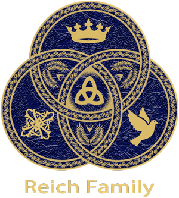
Respecting the Temple requires the disciplined practice of moderation, especially in consumption. In a world that promotes excess, this discipline is a conscious stand against the sin of Gluttony, classified among the seven deadly sins by the monk Evagrius Ponticus and later refined by Pope Gregory the Great, the 64th Bishop of Rome and Head of the Roman Catholic Church from 590 to 604. When moderation is abandoned and eating proceeds to excess, it constitutes a violation of the Temple. This becomes outwardly, and tragically, evident in the attainment of massive weight, a self-inflicted distortion of the sacred Image of Almighty God gifted to that person at birth. Such physical distortion is a visible sign of an internal spiritual failure.
Excessive alcohol consumption, drugs whether prescription or otherwise, smoking or vaping, and pornography are just a few examples of things that violate the purity of the Temple. We do not consume alcohol in excess. We refrain from the usage of all drugs, unless absolutely necessary. Alcohol and drug abuse lead to death. Psychiatric drugs that are prescribed by psychiatrists and general practitioners violate the Temple with severe side effects. Pornography is poison to the Mind, a mighty component of the Temple. Pornography can lead to acting out a sex act outside the Holy Bond of Matrimony or the encouragement to engage in a self sex act that is just as impure to the Temple.
We believe the Temple can be defiled not only by actions but by the very words that proceed from it. Words hold immense power to inflict harm on others and to corrupt oneself; their capacity for disaster must never be underestimated. Unclean speech, such as vulgarity, expletives, and all malicious language, constitutes a direct defilement of the sacred self. This truth is underscored by scripture: James 1:26 warns, If any man among you seem to be religious, and bridleth not his tongue, but deceiveth his own heart, this man's religion is vain. Consequently, we hold that every word spoken or written represents the Reich Family, our anointed father Reich, and Almighty God. We are therefore perpetually mindful, exercising vigilant stewardship over all that proceeds from the Temple of our speech.
We do not defile the Temple with sexual sins, which includes any sex act outside of the Holy Bond of Matrimony. Sexual acts with others outside marriage is a sin and well understood to be so; however, self violation of the Temple is just as sinful. If impure sexual thoughts violate the purity of the Temple, a sex act with one's self is even more of a violation. It is true that a self sex act does not hurt others but it does hurt one's self. Impure thoughts are as serious as a sex act. If you harbour thoughts of sexual fantasies, you have defiled the purity of the Mind. Matthew 5:27-28 says, 27 Ye have heard that it was said by them of old time, Thou shalt not commit adultery: 28 But I say unto you, That whosoever looketh on a woman to lust after her hath committed adultery with her already in his heart. Proverbs 23:7 states, For as he thinketh in his heart, so is he. Your thoughts define you. Sexual fantasies are highly dangerous and most unclean. Sexual fantasies can lead to acting out those fantasies in real life with devastating and sometimes deadly results.
We respect the sanctity and preservation of the Temples of others. Any person who violates the Temple of another has committed a grave sin. The most serious example is the violation of the Temple of a Child, through a sex act, a physically abusive act, or murder. A child is the most Pure and Perfect Temple among us. The one who commits such a violation against a child is at the Mercy of Almighty God's Vengeance. Whether this person faces judgement in this life or in the next, a reckoning will eventually come. The consequences for violating the Purity of the Temple of a Child are the most severe of all. A deplorable sex act starts with a fantasy that has defiled the offender's Temple long before they violate the Precious and Pure Temple of a Child. This is why all offenses against the Temple are to be taken very seriously, whether by thought or by deed. (Explore the Table of Contents or return to the Beginning)

The Reich Family holds the same views as the Church of Jesus Christ of Latter Day Saints (LDS or The Mormons) as to the importance of genealogical research. The Reich Family Genealogical Research Project is a sacred endeavour rooted in our commitment to remembrance, truth, and familial unity. It serves as a living archive for the records, stories, and legacies of those who came before us, preserving their memory within the spiritual and historical framework of our Family. This project reflects our belief that honouring the past is essential to understanding our place in the present and guiding our path into the future.
Our research is conducted with diligence and reverence, drawing upon trusted genealogical platforms such as FamilySearch.org and JewishGEN. These resources allow us to trace our lineage across generations, uncovering connections that affirm our shared identity and deepen our understanding of the lives that shaped our Family. Each discovery is approached not merely as data, but as a sacred thread in the tapestry of our collective story.
The articles and memorials we produce are grounded in historical documents that bear witness to the lives of our ancestors. These include census records, marriage and death certificates, military service files, naturalisation papers, and ship manifests. Through these materials, we reconstruct the journeys, struggles, and triumphs of those who came before us, ensuring that their voices are not lost to time. Every memorial is crafted with care, reflecting our devotion to truth and our love for those whose lives we honour.
With the exception of our publicly shared research on Find a Grave, all writings within the project are private, intended for members of the Reich Family and fellow researchers who share our commitment to historical integrity. However, in rare cases where an individual’s story holds broader significance to the public historical record, we make select memorials available beyond our circle. Examples include the articles honouring Polly Hannah Klaas and her grandfather Dr. Eugene Reed, as well as The Life and Death of Maria Katsaris, its companion article, Maria Katsaris: Through the Eyes of Another Disciple, and Maria's father's article, Remembering Steven Katsaris. These memorials serve not only as tributes but as contributions to the greater understanding of history and humanity.
The Reich Family Genealogical Research Project would like to thank Fielding McGehee and Rebecca Moore for linking to our articles: The Life and Death of Maria Katsaris and Remembering Steven Katsaris from their Remembrances page and from the Jonestown Report (Vol 27, Nov '25) on their website. We consider their Jonestown & Peoples Temple: A Digital Archive website to be the most comprehensive online resource available on the subject.
The Genealogical Research Project is more than a collection of documents. It is a reflection of our sacred duty to remember, to preserve, and to pass on the truth. It is an expression of our love for one another and our reverence for the lives that have shaped our Family. Through this work, we remain connected to our past, grounded in our present, and prepared for the future that awaits us. (Explore the Table of Contents or return to the Beginning)
The Reich Family is a Trinitarian religious organisation headquartered in Denver Colorado with international chapters around the world. At the theological heart of the Reich Family is the ancient New Testament concept of the ekklēsia: the "called-out assembly." The Reich Family is a unique Trinitarian religious group that is also a thriving, practical family. While our faith shares philosophical roots with Catholicism and Judaism, our defining characteristic is a sacred covenant of familial kinship, signified by the voluntary legal adoption of the Reich Family surname which is an act of profound transformation and unity. Our daily life and governance are shaped not by edict but by collective, democratic decision-making, ensuring that our shared beliefs and practices truly reflect the will and needs of the entire Family.
The Reich Family is a small Colorado‑based religious organisation with under a thousand members, organised into international chapters that support privacy, safety, and practical functioning. Chapters operate under the authority of the Denver headquarters and are not separate legal entities, ensuring unified doctrine, governance, and mission. The Family is incorporated as a domestic non‑profit religious organisation, verifiable via Corporate ID: 20261456940 and listed with Dun & Bradstreet (D‑U‑N‑S® Number: 14‑583‑8166). Its U.S. legal status enables property ownership, agreements, and the receipt of domestic (ACH) and international (SWIFT) tithes through its American business account, providing continuity and accountability for global operations. Recognised as a church under the Internal Revenue Code, the Family operates exclusively for religious and charitable purposes under 26 U.S.C. 501(c)(3) and as a New Testament ekklēsia under 26 U.S.C. § 508(c)(1)(A), prohibiting private inurement, limiting political activity, and complying with all relevant IRS and charitable‑solicitation requirements, including standards under 26 U.S.C. § 170(c)(2).
We profess one Divine Essence in three Persons: Almighty God the Father, Christ Jesus the Son, and the Holy Spirit. The Trinity is omnipotent, omniscient, omnipresent, and eternal. We love each Person of the Trinity equally and draw understanding from Scripture: the Father’s sovereignty, the Son’s saving love and miracles, and the Spirit’s gifts and fruits alive within us. Our faith is fully Trinitarian, not polytheistic.
We hold the Old and New Testaments as the complete Holy Writings of our religion, illuminated by the Holy Spirit. Through Scripture, we gain living guidance for our daily walk, learn the history of our faith, and understand the presence and power of the Holy Trinity. We honour the Torah’s first five books and value the Apostolic teachings that formed early churches, recognising both unity and honest acknowledgment of differences in interpretation across time.
We pray in unity to our anointed father Reich, who intercedes for us to the Holy Trinity through his Spiritual Gift of Faith. We do not worship him; we pray through him, trusting the power of his love and faith to lift our prayers to Almighty God the Father, Christ Jesus the Son, and the Holy Spirit. This practice is rooted in the Communion of Saints, the living fellowship willed by the Holy Trinity that unites the faithful in Heaven, in Purgatory, and on earth as one family. Members may therefore pray to the Blessed Mother, to the saints, and to their own departed loved ones, offering traditional devotions such as the Hail Mary, the Rosary, and countless other prayers cherished by the faithful for centuries. Whether prayer is directed first to Reich, to Mary, to a saint, to a loved one, or directly to the Father, Son, or Holy Spirit, all is part of the one great chorus of the faithful. Reich, as the living intercessor for the Reich Family, gathers every prayer and lifts it, together with the whole life of the Family, to the Holy Trinity.
We hold that the Charismata consisting of the Word of Wisdom, the Word of Knowledge, the Gift of Faith, the Gift of Healing, the Working of Miracles, the Gift of Prophecy, the Discerning of Spirits, Diverse Kinds of Tongues, and the Interpretation of Tongues - are sovereignly bestowed by the Holy Spirit and are active, divine empowerments for today, essential for the building up of our sacred assembly as a global ekklēsia. Rooted in Joel's prophecy, Christ's promises, and Pentecost's fulfilment, these gifts are categorised as revelation, power, or inspired speech, and are distributed by the Spirit's will alone for the common good of our global ekklēsia.To limit these gifts to ancient biblical times would be to limit a Person of the Godhead. They are the divine means through which our global Family is sustained, guided, and perfected. Our anointed father Reich has been chosen to bear several, including the Gift of Faith which underpins his intercessory role. Others among us likewise receive specific Charismata. An individual is chosen by the Holy Spirit as the vessel, but the edification and blessing flow to the entire Family. Thus, every manifestation serves to strengthen, unify, and spiritually nourish the entire Reich Family in our earthly pilgrimage.
We tithe one tenth of our income and freely give our time, talents, and remember the Reich Family in our estate plans to sustain and grow the Family. Tithing is understood as an act of spiritual stewardship and mutual responsibility, wherein members pledge one tenth of their income, along with their time, skills, and professional abilities, to support the collective welfare, mission, and long-term continuity of the ekklesia, viewing this contribution not merely as obedience to Old Testament precedent but as a transformative act of trust in the Triune God. This practice echoes Jesus’ encounter with the rich young ruler in Matthew 19:16-30, teaching that true belonging and commitment require loosening one’s attachment to material wealth for the sake of a higher purpose. While we are not called to give all possessions, the passage exposes the spiritual condition that giving must address: complete trust in the Holy Trinity rather than earthly security. Thus, tithing is framed as an investment, yielding abundant reward both now and in eternity, shaping members into stewards who hold possessions lightly, store up treasure in heaven, and walk without reserve in the way shown by Christ. Through this voluntary devotion and sacrifice, the Reich Family affirms its shared identity, strengthens its bonds, sustains its work, and ensures its legacy for future generations.
The Rite of Ordination is a consecration to a divinely called role in our Family. Drawing from the ancient pattern established by Christ who ordained the twelve disciples, continued by the twelve who ordained the first deacons described in Acts 6:2-6, and carried forward through the ages as the apostles ordained elders in every church, this sacrament confers authority from the Holy Trinity upon those called to serve. From those whom the Holy Trinity calls, our anointed father Reich has ordained twelve to serve as the Disciples of our anointed father, sending them forth just as Christ sent His own twelve. These Disciples travel to our chapters scattered across nations and, through Reich's intercession to the omnipresent Holy Trinity, ordain Deacons to serve the Sacred Rites of incense, Eucharist, and anointing in every local chapter. When the divinely called is presented for ordination, the Disciple lays hands on the ordinand, the congregation joining in a chain of touch as a gesture of unity, and the prayer of consecration is spoken. The Reich Family reverently draws from the ancient and unbroken tradition of the Catholic Church, incorporating essential elements such as presentation and election, laying on of hands, and the solemn prayer of consecration, we are an independent Trinitarian religion whose rites flow from the spiritual authority vested by the Holy Trinity in our own family. The complete Rite of Ordination follows a nine-part structure: the Presentation and Election where the Family affirms the call; the Homily explaining the sacred position; the Examination where the ordinand professes faith and promises faithful service; the Litany of Supplication invoking the prayers of the saints and faithful departed; the Laying On of Hands and Prayer of Consecration where the Holy Spirit is invoked to fill the ordinand; the Anointing of the hands with consecrated oil for those who will administer the Sacred Rites; the Investiture with the symbols of office; the Welcome where the assembly offers the sign of peace; and the First Exercise of Ministry where the newly ordained immediately exercises their sacred duties. Thus the ancient line of ordination, stretching from Christ through His Disciples and later through the apostles to our own day, continues unbroken, and the one called by God is forever changed, set apart, and sent forth to serve.
The Rite of Baptism is the sacred rite of conversion and initiation into the Reich Family's Trinitarian faith. It cleanses from sin, grants new birth, and incorporates the believer into the covenant community. Rooted in Scripture and the ancient tradition of the Catholic Church, the rite follows the Trinitarian order: the sign of the Holy Trinity (CCC 1235), the proclamation of the Word (CCC 1236), the exorcism and anointing with the Oil of Salvation (CCC 1237), the consecration of the water (CCC 1238), the essential rite of triple pouring with the Trinitarian formula (CCC 1239-1240), the anointing with sacred chrism (CCC 1241), the white garment and lighted candle (CCC 1243), and the solemn blessing (CCC 1245). These elements, drawn from the Rituale Romanum and the Ordo Baptismi Parvulorum, form the structure of our rite. The Rite of Baptism is administered by the Deacons of the Reich Family, who are ordained for this sacred work. Baptism is administered by pouring, and the Family baptises entire households upon entry, following the biblical pattern of household baptisms recorded in the Acts of the Apostles. The rite is celebrated with dignity and reverence, honouring the distinct work of the Father, the Son, and the Holy Spirit, who together act in this sacrament to claim, cleanse, and seal the believer as a member of the Reich Family. Through baptism, the believer is cleansed by the Father, united to the Son, sealed with the Holy Spirit, and welcomed into the covenant community.
The Reich Family expresses its devotion to the Holy Trinity through three distinct Sacred Rites each grounded in sacred Scripture drawing upon the ancient traditions of the Catholic Church, which we honour while maintaining our identity as an independent Trinitarian religious body. Incense rises to the Father, a visible sign of prayer ascending to the throne from which all creation flows, just as He commanded in the ancient Temple and as the Psalmist declared, "Let my prayer be set forth before thee as incense." Bread and wine are offered to the Son in the Eucharist, fulfilling His command on the night He was betrayed to take, eat, and drink in remembrance of His sacrifice until He comes again in glory. Oil is poured out for the Holy Spirit, anointing the faithful as the apostles anointed, invoking His presence and the gifts of wisdom, understanding, counsel, and fortitude. We do not conflate these offerings nor confuse the Persons, but exalt each one in a separate and equal act of devotion. The Holy Trinity divinely calls and equips certain members of the Family to serve as administrators of these Rites. Those whom the Trinity has called, the Disciples of Reich, through the intercession of our father Reich to the omnipresent Holy Trinity, ordains as Deacons of the Reich Family in every chapter. When the chapter gathers, one of these Deacons steps forward to bless the altar, offer incense to the Father, break bread and pour wine for the Son, and anoint with oil in the name of the Holy Spirit. Through the incense, our prayers ascend to the Father; through the Eucharist, we remember the sacrifice of the Son and receive His body and blood; through the anointing, we are filled afresh with the Holy Spirit's presence and gifts. Though we are scattered across nations, we are one Family, united in this threefold worship, gathered around the same Table, lifted by the same Spirit, and embraced by the same Triune God.
We believe in life everlasting. We hold that the Holy Trinity guides every soul from this life into the next, receiving each person in the moment of the Particular Judgment, where the truth of one’s earthly pilgrimage is revealed in the perfect light of Almighty God. Those who die in grace enter the joy of Heaven, while those still needing purification are perfected in Purgatory, upheld by the prayers of the faithful and the living fellowship of the Communion of Saints that unites the Church in Heaven, on earth, and in the place of final sanctification. Those who freely reject divine love choose the separation of Hell, turning from the mercy offered by the Father, the redemption of the Son, and the sanctifying grace of the Holy Spirit. At the end of time, Christ Jesus will return in glory for the Last Judgment, raising the dead in the Resurrection of the Body and revealing before all creation the justice, mercy, and triumph of the Triune God. The journey of salvation reaches its fulfilment in the New Heaven and the New Earth, where the redeemed dwell forever in the unveiled presence of the Father, the Son, and the Holy Spirit, and where all creation is restored to the glory for which it was made.
We govern ourselves as a democracy with our anointed father Reich as the head of the Family and twelve Disciples as an administrative council. The Family itself stands as the Supreme Governing Body, holding ultimate authority through its collective vote. All issues, including membership, are openly discussed and decided by the Family. A voice in the discussion phase and full voting rights are granted to girls from age twelve and boys from age thirteen. Though Reich retains the rare power to reject or return a decision, respect for the Family’s will prevails to ensure that leadership remains balanced and the Family’s voice remains supreme.
We maintain a private, secure, and transparent voting system, designed and built entirely by advanced AI under our direct supervision. Voting is convenient and accessible, enabling members to cast their ballots securely from a phone or any device, no matter where they are. Both voting and results pages require username/password authentication, validated by a Cloudflare Worker using a secret environment variable token. A Cloudflare Vote Process Worker validates and records votes and comments to a private GitHub repository using an encrypted token. A second, domain-restricted Cloudflare Proxy Worker fetches this data with an encrypted token to serve real-time added comments and vote results. This end‑to‑end architecture guarantees privacy, integrity, and clarity from casting to results, reflecting the Family's devotion to fairness and trust in its democratic process.
Our political beliefs are rooted in a moderate conservatism shaped by faith and a commitment to supporting every family. We believe a stable and loving home is the foundation of a strong society. We champion the ideal of the married mother and father household while recognising, honouring, and actively supporting the many courageous single‑parent families among us, who are the backbone of our community. We prioritise religious liberty and parental rights, defending freedom of conscience, school choice, transparency in education, and policies that provide economic dignity for parents. We oppose cultural movements that undermine these rights, including the targeted promotion of alternative sexualities to children and teens. We uphold the sanctity of life, promote sexual integrity and prudence, and affirm religious freedom as the first freedom. We believe families are best strengthened by a vibrant civil society rather than expansive government. We seek a culture that reinforces marriage, responsible parenthood, positive role models, and the freedoms that allow families of every structure to flourish in faith and community. We reject both revolutionary progressivism and reactionary populism and align with a principled conservatism of stewardship that preserves fundamental rights, social harmony, and lawful governance.
We raise our children, from infancy until their Coming of Age, as our most sacred trust within a covenant of love, scriptural teaching, and deliberate protection. They are taught the love and power of the Holy Trinity and the intercessory role of their anointed earthly father Reich. Guided by Scripture, we instill honour for parents and elders, respect for siblings and friends, and the principles of stewarding the body as a Temple. We avoid excessive discipline, heeding the command not to provoke to wrath. Our youngest are taught academically within the Family for their safety before attending trusted parochial schools, a step toward our future goal of Family‑run schools. This nurturing foundation prepares them for the sacred responsibilities of youth and future democratic membership in the Family.
The Reich Family's Coming of Age ceremony, held for girls at twelve and boys at thirteen, is a foundational rite of passage consciously modeled on the Jewish Bat and Bar Mitzvah traditions, yet it is distinctly adapted to reflect the Family's own theological principles of gender parity and communal integration. Drawing on Judaic explanations for these specific ages—which cite both scriptural precedent for male maturity at thirteen and Talmudic reasoning for female maturity at twelve—the Reich Family uses this milestone to formally confer full adult status upon its youth. At this point, they become accountable for their actions under the Family's interpretation of biblical law and are expected to take on serious roles and responsibilities. Critically, and as a point of departure from the strict observance of Orthodox Judaism, the Family explicitly regards girls as equal to boys in all subsequent rights and duties. From the day of their Coming of Age, both young women and men are granted a strong voice in governance, including the power to vote on pivotal matters like accepting new members. This transition is thus understood not only as an individual's passage into accountability but as a vital event that strengthens the entire Reich Family by welcoming participating young adults into its fold.
Our youth take the Vow of Purity after their Coming of Age, pledging before our anointed father Reich, Almighty God, their future spouse, and themselves to remain pure in mind and body, offering their Temple, created in the Image of God, with a clear conscience in the Sacrament of Matrimony or, if called to a single life, in lifelong consecration. Inspired by Saint Agnes, the twelve year old martyr and patron of purity whose steadfast devotion exemplifies spiritual courage, they learn that purity is an active stewardship of the body entrusted to them by God. This calling is affirmed in I Thessalonians 4:3-4, Matthew 5:8, and I Timothy 4:12, which teach sanctification, purity of heart, and the exemplary conduct expected of the young. Likewise, I Corinthians 6:19-20 reminds them that their bodies are the Temple of the Holy Ghost, and I Timothy 5:22 commands believers to keep themselves pure. Through this vow, our youth embrace a life of inner strength, reverence for God, respect for their future spouse, and the preservation of their Almighty God given dignity, following the enduring example of Saint Agnes.
We educate in human sexuality through Catholic guidelines, led primarily by parents and supported by parochial schools. We teach chastity, the gravity of sex outside marriage, and the dignity of the person. Our youth learn that sex acts include both acts with others and acts with oneself, and that chastity honours the temple of the body and the moral order of marriage.
We encourage our teens, after secondary school, to leave home for a Time of Reflection, through university or travel, to freely discern whether to remain in the Family or live outside it. Unlike communal traditions insulated from society, our youth have grown among broader communities and carry our formation into the world. Whether they return or not, they are loved and always welcome.


We honour the human body as a Temple created in the Image of Almighty God: mind, body, and soul given for Almighty God’s glory. We dress modestly, keep healthy weight and hygiene, and seek beauty that reflects Almighty God’s majesty. We abstain from meat and ultra-processed foods, practice moderation, exercise, rest, and reject gluttony and excess in all its forms. We protect the Temple from violations: excessive alcohol, drugs, smoking or vaping, and pornography. We guard our words and thoughts, knowing impurity begins in the heart. We condemn any violation of another’s Temple, especially that of a child, as a grave sin under Almighty God’s vengeance. All offenses against the Temple, whether by thought or deed, are taken with utmost seriousness.
We cherish our genealogy as a sacred work of remembrance and truth. Using trusted platforms and historical documents, we preserve the lives and legacies of those before us in private memorials, sharing select public pieces only when they serve the broader historical record. Each thread we uncover strengthens our identity and honours those whose stories guide us forward.
We are the Reich Family - a Trinitarian religious organisation headquartered in Denver Colorado with international chapters around the world. We are an ekklēsia; a called-out assembly spread across nations yet joined as one body. Our international chapters root us in many lands while preserving our identity through covenant-centred embodiments of our faith. Our bond is one of deliberate kinship, sealed through the sacred commitment of taking the Reich Family surname, an act that symbolises a profound familial and religious transformation that unites us as one Family in covenant. Our faith is enacted through our democratic will, where every member, entrusted from the age of twelve for girls and thirteen for boys, carries the authority and responsibility to shape our path through a secure, transparent voting system built to ensure fairness and trust. Within this covenant, we honour the intercession and guidance of Reich, our anointed earthly father, whose faith strengthens our own. Every manifestation of the Charismata builds the assembly, for the grace given to each member is for the good of all. We live with sacred distinction: guarding the Temple of mind and body, raising our children in love and truth, offering our youth a Time of Reflection to freely discern their calling, and stewarding our resources with generosity and purpose. The Sacred Rites of the Holy Trinity offers distinct devotion to Almighty God, Christ Jesus, and the Holy Spirit. The RIte of Baptism initiates our members into our familial covenant with the Holy Trinity. These ceremonies and more are administered by Deacons ordained through the ancient apostolic line of succession that continues in our Family. We are a family bound by covenant, and love; stepping forward with a devotion that shapes our purpose, fortifies our unity, and bears witness to our presence in the world as one Family under Almighty God the Supreme Creator who made us in His Own Image, Christ Jesus our Redeemer who reveals the fullness of divine compassion, and the Holy Spirit who bestows His Divine Gifts and sustains our assembly.(Explore the Table of Contents or return to the Beginning)
110 16th Street Suite 1460 Denver Colorado 80202-5269 Call: (303) 565-5966
Unit 166301 PO Box 7169 Poole BH15 9EL United Kingdom SMS: (866) 98 REICH
Sequential Citation Index
The Reich Family non-profit corporation maintains its principal office at 110 16th Street Suite 1460, Denver Colorado 80202-5269. This address receives legal mail only. It does not receive general correspondence mail. Please see our UK mailing address below for general correspondence mail. Our corporate records, including Articles of Incorporation, bylaws, and financial statements, are maintained internally by the organisation.
Our mailing address is Reich Family, Unit 166301 PO Box 7169, Poole BH15 9EL, United Kingdom.
Reich Family Nonprofit Corporation Registry. Colorado Secretary of State, State of Colorado, https://www.sos.state.co.us/biz/BusinessEntityDetail.do?masterFileId=20261456940. Accessed 16 Apr. 2026.
Our US Colorado phone number: (303) 565-5966 is dedicated to voice calls. This is a landline phone number so it can't receive SMS or text messages. We have a toll free number dedicated to SMS or text messages.
The Reich Family toll free phone number (866) 98 REICH (866-987-3424) is dedicated to SMS or text. By sending an SMS or text to (866) 98 REICH (866-987-3424), you automatically opt in to receive SMS responses from the Reich Family. To our members: by texting START to (866) 98 REICH (866-987-3424), you are authorising the Reich Family to send you transactional SMS's for Religious Services, Conversational/Alerts, and Events & Planning. You may unsubscribe at any time by replying STOP. Reply HELP for help. Message frequency varies. Standard message and data rates may apply. View our Privacy Policy at https://reich.tf/privacypolicy and our Terms & Conditions at https://reich.tf/termsandconditions for more information. We do not share mobile information with third parties for marketing purposes.
C.F.R. Title 26 § 1.501(c)(3)-1 - Organisations Organized and Operated for Religious, Charitable, Scientific, Testing for Public Safety, Literary, or Educational Purposes, or for the Prevention of Cruelty to Children or Animals. https://www.ecfr.gov/current/title-26/part-1/section-1.501(c)(3)-1. Accessed 5 Apr. 2026.
Churches, integrated auxiliaries and conventions or associations of churches, Internal Revenue Service. https://www.irs.gov/charities-non-profits/churches-integrated-auxiliaries-and-conventions-or-associations-of-churches. Accessed 5 Apr. 2026.
U.S.C. Title 26 § 508 - Special rules with respect to section 501(c)(3) organisations. https://www.govinfo.gov/content/pkg/USCODE-2023-title26/html/USCODE-2023-title26-subtitleA-chap1-subchapF-partII-sec508.htm. Accessed 5 Apr. 2026.
U.S.C. Title 26 § 170 - Charitable, Etc., Contributions and Gifts. https://www.govinfo.gov/content/pkg/USCODE-2023-title26/html/USCODE-2023-title26-subtitleA-chap1-subchapB-partVI-sec170.htm. Accessed 5 Apr. 2026.
Williams, Alex. "Why Do Catholics Pray to Saints? Is It Biblical?" Christianity.com, 2023, www.christianity.com/wiki/prayer/why-do-catholics-pray-to-saints-is-it-biblical.html. Accessed 28 Feb. 2026.
"Charismata." Catholic Answers, Catholic Answers, www.catholic.com/encyclopedia/charismata. Accessed 28 Feb. 2026.
Catechism of the Catholic Church, 2nd ed., United States Conference of Catholic Bishops, 2019, p. 394, Part Two: the Celebration of the Christian Mystery, Section Two the Seven Sacraments of the Church, Chapter Three the Sacraments at the Service of Communion, Article 6 the Sacrament of Holy Orders, III. The Three Degrees of the Sacrament of Holy Orders, IV. the Celebration of This Sacrament www.usccb.org/sites/default/files/flipbooks/catechism/394/. Accessed 16 Mar. 2026.
Catechism of the Catholic Church, 2nd ed., United States Conference of Catholic Bishops, 2019, p. 320, Part Two: the Celebration of the Christian Mystery, Section Two the Seven Sacraments of the Church, Chapter One the Sacraments of Christian Initiation, Article 1 the Sacrament of Baptism, V. Who Can Baptise? www.usccb.org/sites/default/files/flipbooks/catechism/322/. Accessed 16 Mar. 2026.
Catechism of the Catholic Church, 2nd ed., United States Conference of Catholic Bishops, 2019, p. 338, Part Two: the Celebration of the Christian Mystery, Section Two the Seven Sacraments of the Church, Chapter One the Sacraments of Christian Initiation, Article 3 the Sacrament of the Eucharist, III. the Eucharist in the Economy of Salvation www.usccb.org/sites/default/files/flipbooks/catechism/338/. Accessed 28 Feb. 2026.
Catechism of the Catholic Church, 2nd ed., United States Conference of Catholic Bishops, 2019, p. 184, Part One: the Profession of Faith, Section Two I. the Creeds, Chapter Three I Believe in the Holy Spirit, Article 8 "I Believe in the Holy Spirit," II. The Name, Titles, and Symbols of the Holy Spirit www.usccb.org/sites/default/files/flipbooks/catechism/184/. Accessed 28 Feb. 2026.
Catechism of the Catholic Church, 2nd ed., United States Conference of Catholic Bishops, 2019, p. 298, Part Two: the Celebration of the Christian Mystery, Section One The Sacramental Economy, Chapter Two The Sacramental Celebration of the Paschal Mystery, Article 1 Celebrating the Church's Liturgy, II. How Is the Liturgy Celebrated? www.usccb.org/sites/default/files/flipbooks/catechism/298/. Accessed 28 Feb. 2026.
Catechism of the Catholic Church, 2nd ed., United States Conference of Catholic Bishops, 2019, p. 336, Part Two: The Celebration of the Christian Mystery, Section Two the Seven Sacraments of the Church, Chapter One The Sacraments of Christian Initiation, Article 3 the Sacrament of the Eucharist. I. The Eucharist - Source and Summit of Ecclesial Lifewww.usccb.org/sites/default/files/flipbooks/catechism/336/. Accessed 28 Feb. 2026.
Catechism of the Catholic Church, 2nd ed., United States Conference of Catholic Bishops, 2019, p. 365, Part Two: The Celebration of the Christian Mystery, Section Two the Seven Sacraments of the Church, Chapter Two the Sacraments of Healing, Article 4 The Sacrament of Penance and Reconciliation, VII. the Acts of the Penitent www.usccb.org/sites/default/files/flipbooks/catechism/366/. Accessed 28 Feb. 2026.
Catechism of the Catholic Church, 2nd ed., United States Conference of Catholic Bishops, 2019, p. 318, Part Two: The Celebration of the Christian Mystery, Section Two The Seven Sacraments of the Church, Chapter One The Sacraments of Christian Initiation, Article 1 The Sacrament of Baptism, III. How Is the Sacrament of Baptism Celebrated?www.usccb.org/sites/default/files/flipbooks/catechism/320/. Accessed 28 Feb. 2026.
Catechism of the Catholic Church, 2nd ed., United States Conference of Catholic Bishops, 2019, p. 268, Part One: The Profession of Faith, Section Two I. The Creeds, Chapter Three I Believe in the Holy Spirit, Article 12 "I Believe in Life Everlasting", I. The Particular Judgment, II. Heaven www.usccb.org/sites/default/files/flipbooks/catechism/268/. Accessed 28 Feb. 2026.
Catechism of the Catholic Church, 2nd ed., United States Conference of Catholic Bishops, 2019, p. 270, Part One: The Profession of Faith, Section Two I. The Creeds, Chapter Three I Believe in the Holy Spirit, Article 12 "I Believe in Life Everlasting", III. The Final Purification, or Purgatory, IV. Hell www.usccb.org/sites/default/files/flipbooks/catechism/270/. Accessed 28 Feb. 2026.
Catechism of the Catholic Church, 2nd ed., United States Conference of Catholic Bishops, 2019, p. 272, Part One: The Profession of Faith, Section Two I. The Creeds, Chapter Three I Believe in the Holy Spirit, Article 12 "I Believe in Life Everlasting", V. The Last Judgment www.usccb.org/sites/default/files/flipbooks/catechism/272/. Accessed 28 Feb. 2026.
Catechism of the Catholic Church, 2nd ed., United States Conference of Catholic Bishops, 2019, p. 274, Part One: The Profession of Faith, Section Two I. The Creeds, Chapter Three I Believe in the Holy Spirit, Article 12 "I Believe in Life Everlasting", VI. Hope of the New Heaven and the New Earth www.usccb.org/sites/default/files/flipbooks/catechism/274/. Accessed 28 Feb. 2026.
Catechism of the Catholic Church, 2nd ed., United States Conference of Catholic Bishops, 2019, p. 248, Part One: The Profession of Faith, Section Two I. The Creeds, Chapter Three I Believe in the Holy Spirit, Article 9 "I Believe in the Holy Catholic Church", Paragraph 5. The Communion of Saints www.usccb.org/sites/default/files/flipbooks/catechism/248/. Accessed 28 Feb. 2026.
Catechism of the Catholic Church, 2nd ed., United States Conference of Catholic Bishops, 2019, p. 256, Part One: The Profession of Faith, Section Two I. The Creeds, Chapter Three I Believe in the Holy Spirit, Article 11 "I Believe in the Resurrection of the Body" www.usccb.org/sites/default/files/flipbooks/catechism/256/. Accessed 28 Feb. 2026.
Catechism of the Catholic Church, 2nd ed., United States Conference of Catholic Bishops, 2019, p. 562, Part Three: Life in Christ, Section Two The Ten Commandments, Chapter Two You Shall Love Your Neighbor as Yourself, Article 6 The Sixth Commandment, II. the Vocation to Chastity www.usccb.org/sites/default/files/flipbooks/catechism/562/. Accessed 28 Feb. 2026.
Catechism of the Catholic Church, 2nd ed., United States Conference of Catholic Bishops, 2019, pp. 316‑317, Part Two: The Celebration of the Christian Mystery, Section Two the Seven Sacraments of the Church, Chapter One the Sacraments of Christian Initiation, Article 1 the Sacrament of Baptism, III. How is the Sacrament of Baptism Celebrated? (www.usccb.org/sites/default/files/flipbooks/catechism/318/). Accessed 20 Mar. 2026.
Acts 6 Haydock Catholic Bible Commentary. https://biblehub.com/commentaries/haydock/acts/6.htm. Accessed 16 Mar. 2026.
Congregation for Divine Worship and the Discipline of the Sacraments. "General Instruction of the Roman Missal: IV. Some General Norms for All Forms of Mass." The Vatican, Vatican City State, 17 Mar. 2003, www.vatican.va/roman_curia/congregations/ccdds/documents/rc_con_ccdds_doc_20030317_ordinamento-messale_en.html#IV._SOME_GENERAL_NORMS_FOR_ALL_FORMS_OF_MASS. Accessed 28 Feb. 2026.
Congregation for Divine Worship and the Discipline of the Sacraments. "General Instruction of the Roman Missal: Chapter VI." The Vatican, Vatican City State, 17 Mar. 2003, www.vatican.va/roman_curia/congregations/ccdds/documents/rc_con_ccdds_doc_20030317_ordinamento-messale_en.html#CHAPTER_VI. Accessed 28 Feb. 2026.
Congregation for Divine Worship and the Discipline of the Sacraments. "General Instruction of the Roman Missal: Chapter IV." The Vatican, Vatican City State, 17 Mar. 2003, www.vatican.va/roman_curia/congregations/ccdds/documents/rc_con_ccdds_doc_20030317_ordinamento-messale_en.html#CHAPTER_IV_. Accessed 28 Feb. 2026.
Code of Canon Law - Book IV - Function of the Church Liber (Cann. 879-958). https://www.vatican.va/archive/cod-iuris-canonici/eng/documents/cic_lib4-cann879-958_en.html#Chapter_I. Accessed 7 Mar. 2026.
Quam Singulari - Papal Encyclicals. 8 Aug. 1910, https://www.papalencyclicals.net/pius10/p10quam.htm. Accessed 7 Mar. 2026.
Pontifical Council for the Family. "The Truth and Meaning of Human Sexuality." The Vatican, Vatican City State, 8 Dec. 1995, www.vatican.va/roman_curia/pontifical_councils/family/documents/rc_pc_family_doc_08121995_human-sexuality_en.html. Accessed 28 Feb. 2026.
"Sexuality Education for Young Children." ecatholic.com, files.ecatholic.com/5554/documents/2017/9/HO-SexChecklist%20YoungChilre.cwk%20WP.pdf?t=1504622395000. Accessed 28 Feb. 2026.
"Sexuality Education for Older Children." ecatholic.com, files.ecatholic.com/5554/documents/2017/9/HO-SexChecklist%20OlderChild.cwk%20WP.pdf?t=1505318243000. Accessed 28 Feb. 2026.
"Sexuality Education for Young Teens." ecatholic.com, files.ecatholic.com/5554/documents/2017/9/HO-SexChecklist%20YoungTeens.cwk%20WP.pdf?t=1505318134000. Accessed 28 Feb. 2026.
"Sexuality Education for Older Teens." ecatholic.com, files.ecatholic.com/5554/documents/2017/9/HO-SexChecklistOlderTeencwk.cwk%20WP.pdf?t=1504622458000. Accessed 28 Feb. 2026.
"Catholic Parents Guide to Formation in Human Sexuality." Waterloo Catholics, waterloocatholics.org/catholic-parents-guide-to-formation-in-human-sexuality. Accessed 28 Feb. 2026.
Conte, Ronald. "Sex Education: The Vatican's Guidelines." Catholic Education Resource Center, catholiceducation.org/en/marriage-and-family/sex-education-the-vatican-s-guidelines.html. Accessed 28 Feb. 2026.
"Hail Mary." USCCB, United States Conference of Catholic Bishops, www.usccb.org/prayers/hail-mary. Accessed 28 Feb. 2026.
"Angelus." USCCB, United States Conference of Catholic Bishops, www.usccb.org/prayers/angelus. Accessed 28 Feb. 2026.
"Regina Caeli." USCCB, United States Conference of Catholic Bishops, www.usccb.org/prayers/regina-caeli. Accessed 28 Feb. 2026.
"Hail Holy Queen (Salve Regina)." USCCB, United States Conference of Catholic Bishops, www.usccb.org/prayers/hail-holy-queen-salve-regina. Accessed 28 Feb. 2026.
"Memorare." USCCB, United States Conference of Catholic Bishops, www.usccb.org/prayers/memorare. Accessed 28 Feb. 2026.
"Litany of the Blessed Virgin Mary - Mother of Life." USCCB, United States Conference of Catholic Bishops, www.usccb.org/prayers/litany-blessed-virgin-mary-mother-life. Accessed 28 Feb. 2026.
"Prayers of the Rosary." USCCB, United States Conference of Catholic Bishops, www.usccb.org/prayers/prayers-rosary. Accessed 28 Feb. 2026.
"Bat Mitzvah: What It Is and How to Celebrate." Chabad.org, Chabad-Lubavitch Media Center, www.chabad.org/library/article_cdo/aid/1918218/jewish/Bat-Mitzvah-What-It-Is-and-How-to-Celebrate.htm. Accessed 28 Feb. 2026.
"Bar Mitzvah: What It Is and How to Celebrate." Chabad.org, Chabad-Lubavitch Media Center, www.chabad.org/library/article_cdo/aid/1912609/jewish/Bar-Mitzvah-What-It-Is-and-How-to-Celebrate.htm. Accessed 28 Feb. 2026.
"Why Are Bar and Bat Mitzvah at 13 and 12?" Chabad.org, Chabad-Lubavitch Media Center, www.chabad.org/library/article_cdo/aid/2957494/jewish/Why-Are-Bar-and-Bat-Mitzvah-at-13-and-12.htm. Accessed 28 Feb. 2026.
Reich Family Genealogical Research Project. Reich Family, reich.tf/research. Accessed 28 Feb. 2026.
The Life and Death of Maria Katsaris. Reich Family Genealogical Research Project, reich.tf/research/mariakatsaris. Accessed 28 Feb. 2026.
Maria Katsaris,Through the Eyes of Another Disciple. Sarah Reich, Disciples of Reich, reich.tf/disciples/mariakatsaris. Accessed 28 Feb. 2026.
Steven Katsaris - Father of Maria Katsaris. Reich Family Genealogical Research Project, reich.tf/research/stevenkatsaris. Accessed 28 Feb. 2026.
Jewish Heritage of Polly Hannah Klaas. Reich Family Genealogical Research Project, reich.tf/research/pollyklaas. Accessed 28 Feb. 2026.
Dr Eugene Reed - Grandfather of Polly Hannah Klaas. Reich Family Genealogical Research Project, reich.tf/research/eugenereed. Accessed 28 Feb. 2026.
Remembrances – Jonestown & Peoples Temple. https://jonestown.sdsu.edu/?page_id=108278. Accessed 24 Mar. 2026.
The Jonestown Report, Volume 27, November 2025 – Jonestown & Peoples Temple. https://jonestown.sdsu.edu/?page_id=132189. Accessed 24 Mar. 2026.
Jonestown & Peoples Temple – A Digital Archive. Jonestown & Peoples Temple: A Digital Archive. Accessed 24 Mar. 2026.
"Matthew 9:9 (KJV)." Bible Gateway, www.biblegateway.com/passage/?search=Matthew+9%3A9&version=KJV. Accessed 28 Feb. 2026.
"Acts 9:1-19 (KJV)." Bible Gateway, www.biblegateway.com/passage/?search=Acts+9%3A1-19&version=KJV. Accessed 28 Feb. 2026.
"Matthew 6:9-10 (KJV)." Bible Gateway, www.biblegateway.com/passage/?search=Matthew%206%3A9-10&version=KJV. Accessed 28 Feb. 2026.
"John 14:2 (KJV)." Bible Gateway, www.biblegateway.com/passage/?search=John%2014%3A2&version=KJV. Accessed 28 Feb. 2026.
"Psalm 110:1 (KJV)." Bible Gateway, www.biblegateway.com/passage/?search=Psalm%20110%3A1&version=KJV. Accessed 28 Feb. 2026.
"Matthew 22:44 (KJV)." Bible Gateway, www.biblegateway.com/passage/?search=Matthew%2022%3A44&version=KJV. Accessed 28 Feb. 2026.
"Mark 16:19 (KJV)." Bible Gateway, www.biblegateway.com/passage/?search=Mark%2016%3A19&version=KJV. Accessed 28 Feb. 2026.
"Acts 2:33-35 (KJV)." Bible Gateway, www.biblegateway.com/passage/?search=Acts%202%3A33-35&version=KJV. Accessed 28 Feb. 2026.
"Acts 5:31 (KJV)." Bible Gateway, www.biblegateway.com/passage/?search=Acts%205%3A31&version=KJV. Accessed 28 Feb. 2026.
"Acts 7:55-56 (KJV)." Bible Gateway, www.biblegateway.com/passage/?search=Acts%207%3A55-56&version=KJV. Accessed 28 Feb. 2026.
"Romans 8:34 (KJV)." Bible Gateway, www.biblegateway.com/passage/?search=Romans%208%3A34&version=KJV. Accessed 28 Feb. 2026.
"Ephesians 1:20 (KJV)." Bible Gateway, www.biblegateway.com/passage/?search=Ephesians%201%3A20&version=KJV. Accessed 28 Feb. 2026.
"Colossians 3:1 (KJV)." Bible Gateway, www.biblegateway.com/passage/?search=Colossians%203%3A1&version=KJV. Accessed 28 Feb. 2026.
"Hebrews 1:3 (KJV)." Bible Gateway, www.biblegateway.com/passage/?search=Hebrews%201%3A3&version=KJV. Accessed 28 Feb. 2026.
"Hebrews 1:13 (KJV)." Bible Gateway, www.biblegateway.com/passage/?search=Hebrews%201%3A13&version=KJV. Accessed 28 Feb. 2026.
"I Corinthians 6:19-20 (KJV)." Bible Gateway, www.biblegateway.com/passage/?search=1+Corinthians+6%3A19-20&version=KJV. Accessed 28 Feb. 2026.
"I Peter 3:22 (KJV)." Bible Gateway, www.biblegateway.com/passage/?search=1%20Peter%203%3A22&version=KJV. Accessed 28 Feb. 2026.
"Revelation 3:21 (KJV)." Bible Gateway, www.biblegateway.com/passage/?search=Revelation%203%3A21&version=KJV. Accessed 28 Feb. 2026.
"John 3:16 (KJV)." Bible Gateway, www.biblegateway.com/passage/?search=John%203%3A16&version=KJV. Accessed 28 Feb. 2026.
"Isaiah 53:4-6 (KJV)." Bible Gateway, www.biblegateway.com/passage/?search=Isaiah%2053%3A4-6&version=KJV. Accessed 28 Feb. 2026.
"Galatians 5:22-23 (KJV)." Bible Gateway, www.biblegateway.com/passage/?search=Galatians%205%3A22-23&version=KJV. Accessed 28 Feb. 2026.
"Matthew 5:17-20 (NCB)." Bible Gateway, www.biblegateway.com/passage/?search=Matthew%205%3A17-20&version=NCB. Accessed 28 Feb. 2026.
"I Corinthians 11:18-19 (NCB)." Bible Gateway, www.biblegateway.com/passage/?search=1%20Corinthians%2011%3A18-19&version=NCB. Accessed 28 Feb. 2026.
"I Corinthians 1:10 (KJV)." Bible Gateway, www.biblegateway.com/passage/?search=I%20Corinthians%201%3A10&version=KJV. Accessed 28 Feb. 2026.
"I Corinthians 12:4-11 (KJV)." Bible Gateway, www.biblegateway.com/passage/?search=1%20Corinthians%2012%3A4-11&version=KJV. Accessed 28 Feb. 2026.
"I Timothy 2:5 (KJV)." Bible Gateway, www.biblegateway.com/passage/?search=1%20Tim.%202%3A5&version=KJV. Accessed 28 Feb. 2026.
"Job 5:1 (KJV)." Bible Gateway, www.biblegateway.com/passage/?search=Job%205%3A1&version=KJV. Accessed 28 Feb. 2026.
"Joel 2:28 (KJV)." Bible Gateway, www.biblegateway.com/passage/?search=Joel%202%3A28&version=KJV. Accessed 28 Feb. 2026.
"Mark 16:17-18 (KJV)." Bible Gateway, www.biblegateway.com/passage/?search=Mark%2016%3A17-18&version=KJV. Accessed 28 Feb. 2026.
"Acts 2:4 (KJV)." Bible Gateway, www.biblegateway.com/passage/?search=Acts%202%3A4&version=KJV. Accessed 28 Feb. 2026.
"Acts 8:18 (KJV)." Bible Gateway, www.biblegateway.com/passage/?search=Acts%208%3A18&version=KJV. Accessed 28 Feb. 2026.
"I Corinthians 12:14 (KJV)." Bible Gateway, www.biblegateway.com/passage/?search=1%20Corinthians%2012%3A14&version=KJV. Accessed 28 Feb. 2026.
"I Corinthians 12:28 (KJV)." Bible Gateway, www.biblegateway.com/passage/?search=1+Corinthians+12%3A28&version=KJV. Accessed 28 Feb. 2026.
"I Corinthians 12:29-30 (KJV)." Bible Gateway, www.biblegateway.com/passage/?search=1+Corinthians+12%3A29-30&version=KJV. Accessed 28 Feb. 2026.
"Genesis 14:20 (KJV)." Bible Gateway, www.biblegateway.com/passage/?search=Genesis%2014%3A20&version=KJV. Accessed 28 Feb. 2026.
"Matthew 19:21-30 (NCB)." Bible Gateway, www.biblegateway.com/passage/?search=Matthew%2019%3A21-30&version=NCB. Accessed 28 Feb. 2026.
"Acts 13:2-3 (KJV)." Bible Gateway, www.biblegateway.com/passage/?search=Acts%2013%3A2-3&version=KJV. Accessed 11 Mar. 2026.
"Mark 3:14 (KJV)." Bible Gateway, www.biblegateway.com/passage/?search=Mark%203%3A14&version=KJV. Accessed 11 Mar. 2026.
"John 15:16 (KJV)." Bible Gateway, www.biblegateway.com/passage/?search=John%2015%3A16&version=KJV. Accessed 11 Mar. 2026.
"Acts 6:2-6 (KJV)." Bible Gateway, www.biblegateway.com/passage/?search=Acts%206%3A6&version=KJV. Accessed 11 Mar. 2026.
"Acts 14:23 (KJV)." Bible Gateway, www.biblegateway.com/passage/?search=Acts%2014%3A23&version=KJV. Accessed 11 Mar. 2026.
"Titus 1:5 (KJV)." Bible Gateway, www.biblegateway.com/passage/?search=Titus%201%3A5&version=KJV. Accessed 11 Mar. 2026.
"I Timothy 4:14 (KJV)." Bible Gateway, www.biblegateway.com/passage/?search=1%20Timothy%204%3A14&version=KJV. Accessed 11 Mar. 2026.
“Matthew 28:19-20 (KJV).” Bible Gateway, www.biblegateway.com/passage/?search=Matthew%2028%3A19-20&version=KJV. Accessed 20 Mar. 2026.
“Acts 2:38-39 (KJV).” Bible Gateway, www.biblegateway.com/passage/?search=Acts%202%3A38-39&version=KJV. Accessed 20 Mar. 2026.
“Romans 6:3-4 (KJV).” Bible Gateway, www.biblegateway.com/passage/?search=Romans%206%3A3-4&version=KJV. Accessed 20 Mar. 2026.
“Acts 16:14-15 (KJV).” Bible Gateway, www.biblegateway.com/passage/?search=Acts%2016%3A14-15&version=KJV. Accessed 20 Mar. 2026.
“Acts 16:30-33 (KJV).” Bible Gateway, www.biblegateway.com/passage/?search=Acts%2016%3A30-33&version=KJV. Accessed 20 Mar. 2026.
“Acts 18:8 (KJV).” Bible Gateway, www.biblegateway.com/passage/?search=Acts%2018%3A8&version=KJV. Accessed 20 Mar. 2026.
“Mark 1:4-11 (KJV).” Bible Gateway, www.biblegateway.com/passage/?search=Mark%201%3A4-11&version=KJV. Accessed 20 Mar. 2026.
"Exodus 30:1-9 (KJV)." Bible Gateway, www.biblegateway.com/passage/?search=Exodus%2030%3A1-9&version=KJV. Accessed 28 Feb. 2026.
"Exodus 3:13-15 (KJV)." Bible Gateway, www.biblegateway.com/passage/?search=Exodus%203%3A13-15&version=KJV. Accessed 28 Feb. 2026.
"Psalm 141:2 (KJV)." Bible Gateway, www.biblegateway.com/passage/?search=Psalm%20141%3A2&version=KJV. Accessed 28 Feb. 2026.
"Revelation 5:8 (KJV)." Bible Gateway, www.biblegateway.com/passage/?search=Revelation%205%3A8&version=KJV. Accessed 28 Feb. 2026.
"Revelation 8:3-4 (KJV)." Bible Gateway, www.biblegateway.com/passage/?search=Revelation%208%3A3-4&version=KJV. Accessed 28 Feb. 2026.
"Luke 22:19 (KJV)." Bible Gateway, www.biblegateway.com/passage/?search=Luke%2022%3A19&version=KJV. Accessed 28 Feb. 2026.
"I Corinthians 11:24 (KJV)." Bible Gateway, www.biblegateway.com/passage/?search=1%20Corinthians%2011%3A24&version=KJV. Accessed 28 Feb. 2026.
"Luke 22:20 (KJV)." Bible Gateway, www.biblegateway.com/passage/?search=Luke%2022%3A20&version=KJV. Accessed 28 Feb. 2026.
"I Corinthians 11:25 (KJV)." Bible Gateway, www.biblegateway.com/passage/?search=1%20Corinthians%2011%3A25&version=KJV. Accessed 28 Feb. 2026.
"I Corinthians 11:26 (KJV)." Bible Gateway, www.biblegateway.com/passage/?search=1%20Corinthians%2011%3A26&version=KJV. Accessed 28 Feb. 2026.
"I Samuel 16:13 (KJV)." Bible Gateway, www.biblegateway.com/passage/?search=1%20Samuel%2016%3A13&version=KJV. Accessed 28 Feb. 2026.
"Isaiah 61:1-3 (KJV)." Bible Gateway, www.biblegateway.com/passage/?search=Isaiah%2061%3A1-3&version=KJV. Accessed 28 Feb. 2026.
"James 5:14-15 (KJV)." Bible Gateway, www.biblegateway.com/passage/?search=James%205%3A14-15&version=KJV. Accessed 28 Feb. 2026.
"Mark 6:13 (KJV)." Bible Gateway, www.biblegateway.com/passage/?search=Mark%206%3A13&version=KJV. Accessed 28 Feb. 2026.
"Isaiah 11:2 (KJV)." Bible Gateway, www.biblegateway.com/passage/?search=Isaiah%2011%3A2&version=KJV. Accessed 28 Feb. 2026.
"I Corinthians 12:8-10 (KJV)." Bible Gateway, www.biblegateway.com/passage/?search=1%20Corinthians%2012%3A8-10&version=KJV. Accessed 28 Feb. 2026.
"Hebrews 9:27 (KJV)." Bible Gateway, www.biblegateway.com/passage/?search=Hebrews%209%3A27&version=KJV. Accessed 28 Feb. 2026.
"Luke 23:43 (KJV)." Bible Gateway, www.biblegateway.com/passage/?search=Luke%2023%3A43&version=KJV. Accessed 28 Feb. 2026.
"John 14:2-3 (KJV)." Bible Gateway, www.biblegateway.com/passage/?search=John%2014%3A2-3&version=KJV. Accessed 28 Feb. 2026.
"II Corinthians 5:8 (KJV)." Bible Gateway, www.biblegateway.com/passage/?search=2%20Corinthians%205%3A8&version=KJV. Accessed 28 Feb. 2026.
"I Corinthians 3:13-15 (KJV)." Bible Gateway, www.biblegateway.com/passage/?search=1%20Corinthians%203%3A13-15&version=KJV. Accessed 28 Feb. 2026.
"Hebrews 12:1 (KJV)." Bible Gateway, www.biblegateway.com/passage/?search=Hebrews%2012%3A1&version=KJV. Accessed 28 Feb. 2026.
"Matthew 25:31-46 (KJV)." Bible Gateway, www.biblegateway.com/passage/?search=Matthew%2025%3A31-46&version=KJV. Accessed 28 Feb. 2026.
"John 5:29 (KJV)." Bible Gateway, www.biblegateway.com/passage/?search=John%205%3A29&version=KJV. Accessed 28 Feb. 2026.
"John 5:28 (KJV)." Bible Gateway, www.biblegateway.com/passage/?search=John%205%3A28&version=KJV. Accessed 28 Feb. 2026.
"Romans 8:11 (KJV)." Bible Gateway, www.biblegateway.com/passage/?search=Romans%208%3A11&version=KJV. Accessed 28 Feb. 2026.
"I Corinthians 15:52-53 (KJV)." Bible Gateway, www.biblegateway.com/passage/?search=1%20Corinthians%2015%3A52-53&version=KJV. Accessed 28 Feb. 2026.
"Revelation 20:11-15 (KJV)." Bible Gateway, www.biblegateway.com/passage/?search=Revelation%2020%3A11-15&version=KJV. Accessed 28 Feb. 2026.
"Revelation 21:1-4 (KJV)." Bible Gateway, www.biblegateway.com/passage/?search=Revelation%2021%3A1-4&version=KJV. Accessed 28 Feb. 2026.
"Isaiah 54:13 (KJV)." Bible Gateway, www.biblegateway.com/passage/?search=Isaiah%2054%3A13&version=KJV. Accessed 28 Feb. 2026.
"Deuteronomy 6:7 (KJV)." Bible Gateway, www.biblegateway.com/passage/?search=Deuteronomy%206%3A7&version=KJV. Accessed 28 Feb. 2026.
"Proverbs 22:6 (KJV)." Bible Gateway, www.biblegateway.com/passage/?search=Proverbs%2022%3A6&version=KJV. Accessed 28 Feb. 2026.
"Exodus 20:12 (KJV)." Bible Gateway, www.biblegateway.com/passage/?search=Exodus%2020%3A12&version=KJV. Accessed 28 Feb. 2026.
"Ephesians 6:4 (KJV)." Bible Gateway, www.biblegateway.com/passage/?search=Ephesians%206%3A4&version=KJV. Accessed 28 Feb. 2026.
"I Thessalonians 4:3-4 (KJV)." Bible Gateway, www.biblegateway.com/passage/?search=1+Thessalonians+4%3A3-4&version=KJV. Accessed 28 Feb. 2026.
"I Timothy 4:12 (KJV)." Bible Gateway, www.biblegateway.com/passage/?search=1+Timothy+4%3A12&version=KJV. Accessed 28 Feb. 2026.
"I Timothy 5:22 (KJV)." Bible Gateway, www.biblegateway.com/passage/?search=1+Timothy+5%3A22&version=KJV. Accessed 28 Feb. 2026.
"John 17:15-18 (KJV)." Bible Gateway, www.biblegateway.com/passage/?search=John+17%3A15-18&version=KJV. Accessed 28 Feb. 2026.
"Joshua 24:15 (KJV)." Bible Gateway, www.biblegateway.com/passage/?search=Joshua+24%3A15&version=KJV. Accessed 28 Feb. 2026.
"Deuteronomy 30:19 (KJV)." Bible Gateway, www.biblegateway.com/passage/?search=Deuteronomy+30%3A19&version=KJV. Accessed 28 Feb. 2026.
"Luke 15:20 (KJV)." Bible Gateway, www.biblegateway.com/passage/?search=Luke+15%3A20&version=KJV. Accessed 28 Feb. 2026.
"Romans 8:38-39 (KJV)." Bible Gateway, www.biblegateway.com/passage/?search=Romans+8%3A38-39&version=KJV. Accessed 28 Feb. 2026.
"Isaiah 49:15 (KJV)." Bible Gateway, www.biblegateway.com/passage/?search=Isaiah+49%3A15&version=KJV. Accessed 28 Feb. 2026.
"Psalm 104:1 (KJV)." Bible Gateway, www.biblegateway.com/passage/?search=Psalm%20104%3A1&version=KJV. Accessed 28 Feb. 2026.
"James 1:26 (KJV)." Bible Gateway, www.biblegateway.com/passage/?search=James%201%3A26&version=KJV. Accessed 28 Feb. 2026.
"Matthew 5:27-28 (KJV)." Bible Gateway, www.biblegateway.com/passage/?search=Matthew%205%3A27-28&version=KJV. Accessed 28 Feb. 2026.
"Proverbs 23:7 (KJV)." Bible Gateway, www.biblegateway.com/passage/?search=Proverbs%2023%3A7&version=KJV. Accessed 28 Feb. 2026.
"Matthew 19:16-30 (NCB)." Bible Gateway, www.biblegateway.com/passage/?search=Matthew%2019%3A16-30&version=NCB. Accessed 28 Feb. 2026.
"Matthew 5:8 (KJV)." Bible Gateway, www.biblegateway.com/passage/?search=Matthew+5%3A8&version=KJV. Accessed 28 Feb. 2026.
110 16th Street Suite 1460 Denver Colorado 80202-5269 Call: (303) 565-5966
Unit 166301 PO Box 7169 Poole BH15 9EL United Kingdom Text: (866) 98 REICH